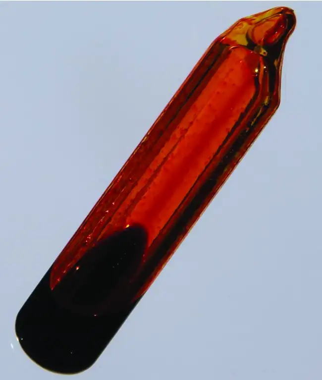
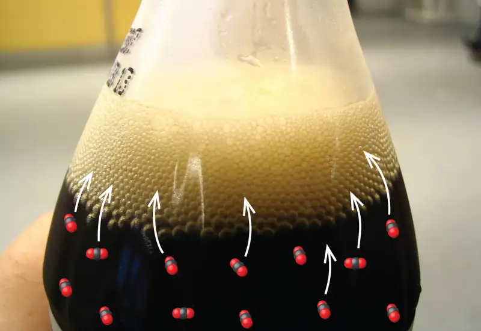

Chapter 13: Fundamental Equilibrium Concepts¶
Introduction¶
Learning Objectives
- Chemical Equilibria
- Equilibrium Constants
- Shifting Equilibria: Le Châtelier’s Principle
- Equilibrium Calculations
![An image depicts three tan squares, lying side-by-side along the upper left corner. Two of the same squares also lie side-by-side in the lower right corner. Each square has a black dot in the center. One of the squares is labeled, “C O subscript 2,” and has a double-headed arrow pointing from it to a red tube-like structure that runs between the squares across the image from the upper right to the lower left. This arrow is labeled, “C O subscript 2 dissolved in plasma.” The red tube has two round red shapes in it, and the upper one is labeled, “C O subscript 2 carried in red blood cells.” The gaps between the squares and the red tube are colored light blue. One of the squares along the top of the image is labeled, “C O subscript 2,” and is connected by a double-headed arrow to an equation in the red tube that is labeled, “C O subscript 2, a plus sign, H subscript 2 O, right-facing arrow, H subscript 2 C O subscript 3, right-facing arrow, H C O subscript 3 superscript negative sign, plus sign, H superscript positive sign.” The compound “H C O subscript 3 superscript negative sign” is then connected by a double-headed arrow to the space in the red tube and is labeled, “H C O subscript 3 superscript negative sign dissolved in plasma as carbonic acid.”](img/cnx-chem-13-00-blood.webp)
Imagine a beach populated with sunbathers and swimmers. As those basking in the sun get too hot, they enter the surf to swim and cool off. As the swimmers tire, they return to the beach to rest. If the rate at which sunbathers enter the surf were to equal the rate at which swimmers return to the sand, then the numbers (though not the identities) of sunbathers and swimmers would remain constant. This scenario illustrates a dynamic phenomenon known as equilibrium, in which opposing processes occur at equal rates. Chemical and physical processes are subject to this phenomenon; these processes are at equilibrium when the forward and reverse reaction rates are equal. Equilibrium systems are pervasive in nature; the various reactions involving carbon dioxide dissolved in blood are examples (see Figure 13.1). This chapter provides a thorough introduction to the essential aspects of chemical equilibria.
13.1 Chemical Equilibria¶
Learning Objectives
By the end of this section, you will be able to:
- Describe the nature of equilibrium systems
- Explain the dynamic nature of a chemical equilibrium
The convention for writing chemical equations involves placing reactant formulas on the left side of a reaction arrow and product formulas on the right side. By this convention, and the definitions of “reactant” and “product,” a chemical equation represents the reaction in question as proceeding from left to right. Reversible reactions, however, may proceed in both forward (left to right) and reverse (right to left) directions. When the rates of the forward and reverse reactions are equal, the concentrations of the reactant and product species remain constant over time and the system is at equilibrium. The relative concentrations of reactants and products in equilibrium systems vary greatly; some systems contain mostly products at equilibrium, some contain mostly reactants, and some contain appreciable amounts of both.
Figure 13.2 illustrates fundamental equilibrium concepts using the reversible decomposition of colorless dinitrogen tetroxide to yield brown nitrogen dioxide, an elementary reaction described by the equation:
Note that a special double arrow is used to emphasize the reversible nature of the reaction.
![A three-part diagram is shown and labeled, “a,” “b,” and “c.” In part a, at the top of the diagram, three beakers are shown, and each one contains a sealed tube. The tube in the left beaker is labeled “t equals 0.” It is full of a colorless gas which is connected to a zoom-in view of the particles in the tube by a downward-facing arrow. This particle view shows seven particles, each composed of two connected blue spheres. Each blue sphere is connected to two red spheres. This type of particle is labeled “N subscript 2 O subscript 4.” The tube in the middle beaker is labeled “pre-equilibrium.” It is full of a light brown gas which is connected to a zoom-in view of the particles in the tube by a downward-facing arrow. This particle view shows nine particles, five of which are composed of two connected blue spheres. Each blue sphere is connected to two red spheres. This type of particle is labeled “N subscript 2 O subscript 4.” The remaining four are composed of two red spheres connected to a blue sphere. This type of particle is labeled “N O subscript 2.” The tube in the right beaker is labeled “at equilibrium.” It is full of a brown gas which is connected to a zoom-in view of the particles in the tube by a downward-facing arrow. This particle view shows eleven particles, three of which are composed of two connected blue spheres. Each blue sphere is connected to two red spheres. The remaining eight are composed of two red spheres connected to a blue sphere. In part b, in the middle of the image, is one graph. This graph has a y-axis labeled, “Concentration,” and an x-axis labeled, “Time.” A red line labeled, “N O subscript 2,” begins in the bottom left corner of the graph at a point labeled, “0,” and rises near the highest point on the y-axis before it levels off and becomes horizontal. A blue line labeled, “N subscript 2 O subscript 4,” begins near the highest point on the y-axis and drops below the midpoint of the y-axis before leveling off. In part c, at the bottom of the image is another graph. This graph has a y-axis labeled, “Rate,” and an x-axis labeled, “Time.” A red line labeled, “k subscript f, ( N subscript 2 O subscript 4 ),” begins in the bottom left corner of the graph at a point labeled, “0,” and rises near the middle of the y-axis before it levels off and becomes horizontal. A blue line labeled, “k subscript f, ( N O subscript 2 ) superscript 2,” begins near the highest point on the y-axis and drops to the same point on the y-axis as the red line before leveling off. The point where both lines become horizontal is labeled, “Equilibrium achieved.”](img/cnx-chem-13-01-equilibrium.webp)
For this elementary process, rate laws for the forward and reverse reactions may be derived directly from the reaction stoichiometry:
As the reaction begins (t = 0), the concentration of the N2O4 reactant is finite and that of the NO2 product is zero, so the forward reaction proceeds at a finite rate while the reverse reaction rate is zero. As time passes, N2O4 is consumed and its concentration falls, while NO2 is produced and its concentration increases (Figure 13.2b). The decreasing concentration of the reactant slows the forward reaction rate, and the increasing product concentration speeds the reverse reaction rate (Figure 13.2c). This process continues until the forward and reverse reaction rates become equal, at which time the reaction has reached equilibrium, as characterized by constant concentrations of its reactants and products (shaded areas of Figure 13.2b and Figure 13.2c). It’s important to emphasize that chemical equilibria are dynamic; a reaction at equilibrium has not “stopped,” but is proceeding in the forward and reverse directions at the same rate. This dynamic nature is essential to understanding equilibrium behavior as discussed in this and subsequent chapters of the text.
Physical changes, such as phase transitions, are also reversible and may establish equilibria. This concept was introduced in another chapter of this text through discussion of the vapor pressure of a condensed phase (liquid or solid). As one example, consider the vaporization of bromine:
When liquid bromine is added to an otherwise empty container and the container is sealed, the forward process depicted above (vaporization) will commence and continue at a roughly constant rate as long as the exposed surface area of the liquid and its temperature remain constant. As increasing amounts of gaseous bromine are produced, the rate of the reverse process (condensation) will increase until it equals the rate of vaporization and equilibrium is established. A photograph showing this phase transition equilibrium is provided in Figure 13.4.

13.2 Equilibrium Constants¶
Learning Objectives
By the end of this section, you will be able to:
- Derive reaction quotients from chemical equations representing homogeneous and heterogeneous reactions
- Calculate values of reaction quotients and equilibrium constants, using concentrations and pressures
- Relate the magnitude of an equilibrium constant to properties of the chemical system
The status of a reversible reaction is conveniently assessed by evaluating its reaction quotient (Q). For a reversible reaction described by
the reaction quotient is derived directly from the stoichiometry of the balanced equation as
where the subscript c denotes the use of molar concentrations in the expression. If the reactants and products are gaseous, a reaction quotient may be similarly derived using partial pressures:
Note that the reaction quotient equations above are a simplification of more rigorous expressions that use relative values for concentrations and pressures rather than absolute values. These relative concentration and pressure values are dimensionless (they have no units); consequently, so are the reaction quotients. For purposes of this introductory text, it will suffice to use the simplified equations and to disregard units when computing Q. In most cases, this will introduce only modest errors in calculations involving reaction quotients.
Example 13.1 Writing Reaction Quotient Expressions
Write the concentration-based reaction quotient expression for each of the following reactions:
(a) \(3\text{O}_{2}(g)\rightleftharpoons 2\text{O}_{3}(g)\)
(b) \(\text{N}_{2}(g)+3\text{H}_{2}(g)\rightleftharpoons 2\text{NH}_{3}(g)\)
(c) \(4\text{NH}_{3}(g)+7\text{O}_{2}(g)\rightleftharpoons 4\text{NO}_{2}(g)+6\text{H}_{2}\text{O}(g)\)
Solution
(a) \(Q_{c}=\:\frac{{[\text{O}_{3}]}^{2}}{{[\text{O}_{2}]}^{3}}\)
(b) \(Q_{c}=\:\frac{{[\text{NH}_{3}]}^{2}}{[\text{N}_{2}]{[\text{H}_{2}]}^{3}}\)
(c) \(Q_{c}=\:\frac{{[\text{NO}_{2}]}^{4}[\text{H}_{2}\text{O}{]}^{6}}{{[\text{NH}_{3}]}^{4}[\text{O}_{2}{]}^{7}}\)
Check Your Learning
Write the concentration-based reaction quotient expression for each of the following reactions:
(a) \(2\text{SO}_{2}(g)+\text{O}_{2}(g)\rightleftharpoons 2\text{SO}_{3}(g)\)
(b) \(\text{C}_{4}\text{H}_{8}(g)\rightleftharpoons 2\text{C}_{2}\text{H}_{4}(g)\)
(c) \(2\text{C}_{4}\text{H}_{10}(g)+13\text{O}_{2}(g)\rightleftharpoons 8\text{CO}_{2}(g)+10\text{H}_{2}\text{O}(g)\)
Answer:
(a) \(Q_{c}=\:\frac{{[\text{SO}_{3}]}^{2}}{{[\text{SO}_{2}]}^{2}[\text{O}_{2}]};\) (b) \(Q_{c}=\:\frac{{[\text{C}_{2}\text{H}_{4}]}^{2}}{[\text{C}_{4}\text{H}_{8}]};\) (c) \(Q_{c}=\:\frac{{[\text{CO}_{2}]}^{8}[\text{H}_{2}\text{O}{]}^{10}}{{[\text{C}_{4}\text{H}_{10}]}^{2}[\text{O}_{2}{]}^{13}}\)
![Four graphs are shown and labeled, “a,” “b,” “c,” and “d.” All four graphs have a vertical dotted line running through the middle labeled, “Equilibrium is reached.” The y-axis on graph a is labeled, “Concentration,” and the x-axis is labeled, “Time.” Three curves are plotted on graph a. The first is labeled, “( S O subscript 2 );” this line starts high on the y-axis, ends midway down the y-axis, has a steep initial slope and a more gradual slope as it approaches the far right on the x-axis. The second curve on this graph is labeled, “( O subscript 2 );” this line mimics the first except that it starts and ends about fifty percent lower on the y-axis. The third curve is the inverse of the first in shape and is labeled, “( S O subscript 3 ).” The y-axis on graph b is labeled, “Concentration,” and the x-axis is labeled, “Time.” Three curves are plotted on graph b. The first is labeled, “( S O subscript 2 );” this line starts low on the y-axis, ends midway up the y-axis, has a steep initial slope and a more gradual slope as it approaches the far right on the x-axis. The second curve on this graph is labeled, “( O subscript 2 );” this line mimics the first except that it ends about fifty percent lower on the y-axis. The third curve is the inverse of the first in shape and is labeled, “( S O subscript 3 ).” The y-axis on graph c is labeled, “Reaction Quotient,” and the x-axis is labeled, “Time.” A single curve is plotted on graph c. This curve begins at the bottom of the y-axis and rises steeply up near the top of the y-axis, then levels off into a horizontal line. The top point of this line is labeled, “k.” The y-axis on graph d is labeled, “Reaction Quotient,” and the x-axis is labeled, “Time.” A single curve is plotted on graph d. This curve begins near the edge of the top of the y-axis and falls steeply toward the x-axis, then levels off into a horizontal line. The bottom point of this line is labeled, “k.”](img/cnx-chem-13-02-quotient.webp)
The numerical value of Q varies as a reaction proceeds towards equilibrium; therefore, it can serve as a useful indicator of the reaction’s status. To illustrate this point, consider the oxidation of sulfur dioxide:
Two different experimental scenarios are depicted in Figure 13.5, one in which this reaction is initiated with a mixture of reactants only, SO2 and O2, and another that begins with only product, SO3. For the reaction that begins with a mixture of reactants only, Q is initially equal to zero:
As the reaction proceeds toward equilibrium in the forward direction, reactant concentrations decrease (as does the denominator of Qc), product concentration increases (as does the numerator of Qc), and the reaction quotient consequently increases. When equilibrium is achieved, the concentrations of reactants and product remain constant, as does the value of Qc.
If the reaction begins with only product present, the value of Qc is initially undefined (immeasurably large, or infinite):
In this case, the reaction proceeds toward equilibrium in the reverse direction. The product concentration and the numerator of Qc decrease with time, the reactant concentrations and the denominator of Qc increase, and the reaction quotient consequently decreases until it becomes constant at equilibrium.
The constant value of Q exhibited by a system at equilibrium is called the equilibrium constant, K:
Comparison of the data plots in Figure 13.5 shows that both experimental scenarios resulted in the same value for the equilibrium constant. This is a general observation for all equilibrium systems, known as the law of mass action: At a given temperature, the reaction quotient for a system at equilibrium is constant.
Example 13.2 Evaluating a Reaction Quotient
Gaseous nitrogen dioxide forms dinitrogen tetroxide according to this equation:
When 0.10 mol NO2 is added to a 1.0-L flask at 25 °C, the concentration changes so that at equilibrium, [NO2] = 0.016 M and [N2O4] = 0.042 M.
(a) What is the value of the reaction quotient before any reaction occurs?
(b) What is the value of the equilibrium constant for the reaction?
Solution
As for all equilibrium calculations in this text, use the simplified equations for Q and K and disregard any concentration or pressure units, as noted previously in this section.
(a) Before any product is formed, \([\text{NO}_{2}]=\:\frac{0.10\:\text{mol}}{1.0\:\text{L}}\:=0.10\:M,\) and [N2O4] = 0 M. Thus,
(b) At equilibrium, \(K_{c}=Q_{c}=\:\frac{[\text{N}_{2}\text{O}_{4}]}{{[\text{NO}_{2}]}^{2}}=\:\frac{0.042}{{0.016}^{2}}\:=1.6\:\times\:{10}^{2}.\) The equilibrium constant is 1.6 \(\times\) 102.
Check Your Learning
For the reaction \(\text{2SO}_{2}(g)+\text{O}_{2}(g)\rightleftharpoons\text{2SO}_{3}(g),\) the concentrations at equilibrium are [SO2] = 0.90 M, [O2] = 0.35 M, and [SO3] = 1.1 M. What is the value of the equilibrium constant, Kc?
Answer:
Kc = 4.3
By its definition, the magnitude of an equilibrium constant explicitly reflects the composition of a reaction mixture at equilibrium, and it may be interpreted with regard to the extent of the forward reaction. A reaction exhibiting a large K will reach equilibrium when most of the reactant has been converted to product, whereas a small K indicates the reaction achieves equilibrium after very little reactant has been converted. It’s important to keep in mind that the magnitude of K does not indicate how rapidly or slowly equilibrium will be reached. Some equilibria are established so quickly as to be nearly instantaneous, and others so slowly that no perceptible change is observed over the course of days, years, or longer.
The equilibrium constant for a reaction can be used to predict the behavior of mixtures containing its reactants and/or products. As demonstrated by the sulfur dioxide oxidation process described above, a chemical reaction will proceed in whatever direction is necessary to achieve equilibrium. Comparing Q to K for an equilibrium system of interest allows prediction of what reaction (forward or reverse), if any, will occur.
To further illustrate this important point, consider the reversible reaction shown below:
The bar charts in Figure 13.6 represent changes in reactant and product concentrations for three different reaction mixtures. The reaction quotients for mixtures 1 and 3 are initially lesser than the reaction’s equilibrium constant, so each of these mixtures will experience a net forward reaction to achieve equilibrium. The reaction quotient for mixture 2 is initially greater than the equilibrium constant, so this mixture will proceed in the reverse direction until equilibrium is established.
![Two sets of bar graphs are shown. The left is labeled, “Before reaction,” and the right is labeled, “At equilibrium.” Both graphs have y-axes labeled, “Concentration ( M ),” and three bars on the x-axes labeled, “Mixture 1,” “Mixture 2,” and “Mixture 3.” The y-axis has a scale beginning at 0.00 and ending at 0.10, with measurement increments of 0.02. The bars on the graphs are color coded and a key is provided with a legend. Red is labeled, “C O;” blue is labeled, “H subscript 2 O;” green is labeled, “C O subscript 2,” and yellow is labeled, “H subscript 2.” The graph on the left shows the red bar for mixture one just above 0.02, labeled “0.0243,” and the blue bar near 0.05, labeled “0.0243.” For mixture two, the green bar is near 0.05, labeled “0.0468,” and the yellow bar is near 0.09, labeled “0.0468.” For mixture 3, the red bar is near 0.01, labeled “0.0330,” the blue bar is slightly above that, labeled “0.190,” with green and yellow topping it off at 0.02. Green is labeled “0.00175” and yellow is labeled “0.00160.” On the right graph, the bar for mixture one shows the red bar slightly above 0.01, labeled “0.0135,” the blue bar stacked on it rising slightly above 0.02, labeled “0.0135,” the green rising near 0.04, labeled “0.0108,” and the yellow bar reaching near 0.05, labeled “0.0108.” A label above this bar reads, “Q equals 0.640.” The bar for mixture two shows the red bar slightly above 0.02, labeled “0.0260,” the blue bar stacked on it rising near 0.05, labeled “0.0260,” the green rising near 0.07, labeled “0.0208,” and the yellow bar reaching near 0.10, labeled “0.0208.” A label above this bar reads “Q equals 0.640.” The bar for mixture three shows the red bar near 0.01, labeled “0.0231,” the blue bar stacked on it rising slightly above 0.01, labeled “0.00909,” the green rising near 0.02, labeled “0.0115,” and the yellow bar reaching 0.02, labeled “0.0117.” A label above this bar reads “Q equals 0.640”.](img/cnx-chem-13-02-mixtures.webp)
Example 13.3 Predicting the Direction of Reaction
Given here are the starting concentrations of reactants and products for three experiments involving this reaction:
Determine in which direction the reaction proceeds as it goes to equilibrium in each of the three experiments shown.
| Reactants/Products | Experiment 1 | Experiment 2 | Experiment 3 |
|---|---|---|---|
| [CO]i | 0.020 M | 0.011 M | 0.0094 M |
| [H2O]i | 0.020 M | 0.0011 M | 0.0025 M |
| [CO2]i | 0.0040 M | 0.037 M | 0.0015 M |
| [H2]i | 0.0040 M | 0.046 M | 0.0076 M |
Solution
Experiment 1:
Qc < Kc (0.040 < 0.64)
The reaction will proceed in the forward direction.
Experiment 2:
Qc > Kc (140 > 0.64)
The reaction will proceed in the reverse direction.
Experiment 3:
Qc < Kc (0.48 < 0.64)
The reaction will proceed in the forward direction.
Check Your Learning
Calculate the reaction quotient and determine the direction in which each of the following reactions will proceed to reach equilibrium.
(a) A 1.00-L flask containing 0.0500 mol of NO(g), 0.0155 mol of Cl2(g), and 0.500 mol of NOCl:
(b) A 5.0-L flask containing 17 g of NH3, 14 g of N2, and 12 g of H2:
(c) A 2.00-L flask containing 230 g of SO3(g):
Answer:
(a) Qc = 6.45 \(\times\) 103, forward. (b) Qc = 0.23, reverse. (c) Qc = 0, forward.
Homogeneous Equilibria¶
A homogeneous equilibrium is one in which all reactants and products (and any catalysts, if applicable) are present in the same phase. By this definition, homogeneous equilibria take place in solutions. These solutions are most commonly either liquid or gaseous phases, as shown by the examples below:
These examples all involve aqueous solutions, those in which water functions as the solvent. In the last two examples, water also functions as a reactant, but its concentration is not included in the reaction quotient. The reason for this omission is related to the more rigorous form of the Q (or K) expression mentioned previously in this chapter, in which relative concentrations for liquids and solids are equal to 1 and needn’t be included. Consequently, reaction quotients include concentration or pressure terms only for gaseous and solute species.
The equilibria below all involve gas-phase solutions:
For gas-phase solutions, the equilibrium constant may be expressed in terms of either the molar concentrations (Kc) or partial pressures (Kp) of the reactants and products. A relation between these two K values may be simply derived from the ideal gas equation and the definition of molarity:
where P is partial pressure, V is volume, n is molar amount, R is the gas constant, T is temperature, and M is molar concentration.
For the gas-phase reaction \(a\text{A}+b\text{B}\rightleftharpoons c\text{C}+d\text{D:}\)
And so, the relationship between Kc and KP is
where Δn is the difference in the molar amounts of product and reactant gases, in this case:
Example 13.4 Calculation of KP
Write the equations relating Kc to KP for each of the following reactions:
(a) \(\text{C}_{2}\text{H}_{6}(g)\rightleftharpoons\text{C}_{2}\text{H}_{4}(g)+\text{H}_{2}(g)\)
(b) \(\text{CO}(g)+\text{H}_{2}\text{O}(g)\rightleftharpoons\text{CO}_{2}(g)+\text{H}_{2}(g)\)
(c) \(\text{N}_{2}(g)+3\text{H}_{2}(g)\rightleftharpoons 2\text{NH}_{3}(g)\)
(d) Kc is equal to 0.28 for the following reaction at 900 °C:
What is KP at this temperature?
Solution
(a) Δn = (2) − (1) = 1
KP = Kc (RT)Δn = Kc (RT)1 = Kc (RT)
(b) Δn = (2) − (2) = 0
KP = Kc (RT)Δn = Kc (RT)0 = Kc
(c) Δn = (2) − (1 + 3) = −2
KP = Kc (RT)Δn = Kc (RT)−2 = \(\frac{K_{c}}{{(RT)}^{2}}\)
(d) KP = Kc (RT)Δn = (0.28)[(0.0821)(1173)]−2 = 3.0 \(\times\) 10−5
Check Your Learning
Write the equations relating Kc to KP for each of the following reactions:
(a) \(2\text{SO}_{2}(g)+\text{O}_{2}(g)\rightleftharpoons 2\text{SO}_{3}(g)\)
(b) \(\text{N}_{2}\text{O}_{4}(g)\rightleftharpoons 2\text{NO}_{2}(g)\)
(c) \(\text{C}_{3}\text{H}_{8}(g)+5\text{O}_{2}(g)\rightleftharpoons 3\text{CO}_{2}(g)+4\text{H}_{2}\text{O}(g)\)
(d) At 227 °C, the following reaction has Kc = 0.0952:
What would be the value of KP at this temperature?
Answer:
(a) KP = Kc (RT)−1; (b) KP = Kc (RT); (c) KP = Kc (RT); (d) 160 or 1.6 \(\times\) 102
Heterogeneous Equilibria¶
A heterogeneous equilibrium involves reactants and products in two or more different phases, as illustrated by the following examples:
Again, note that concentration terms are only included for gaseous and solute species, as discussed previously.
Two of the above examples include terms for gaseous species only in their equilibrium constants, and so Kp expressions may also be written:
Coupled Equilibria¶
The equilibrium systems discussed so far have all been relatively simple, involving just single reversible reactions. Many systems, however, involve two or more coupled equilibrium reactions, those which have in common one or more reactant or product species. Since the law of mass action allows for a straightforward derivation of equilibrium constant expressions from balanced chemical equations, the K value for a system involving coupled equilibria can be related to the K values of the individual reactions. Three basic manipulations are involved in this approach, as described below.
1. Changing the direction of a chemical equation essentially swaps the identities of “reactants” and “products,” and so the equilibrium constant for the reversed equation is simply the reciprocal of that for the forward equation.
2. Changing the stoichiometric coefficients in an equation by some factor x results in an exponential change in the equilibrium constant by that same factor:
3. Adding two or more equilibrium equations together yields an overall equation whose equilibrium constant is the mathematical product of the individual reaction’s K values:
The net reaction for these coupled equilibria is obtained by summing the two equilibrium equations and canceling any redundancies:
Comparing the equilibrium constant for the net reaction to those for the two coupled equilibrium reactions reveals the following relationship:
Example 13.5 demonstrates the use of this strategy in describing coupled equilibrium processes.
Example 13.5 Equilibrium Constants for Coupled Reactions
A mixture containing nitrogen, hydrogen, and iodine established the following equilibrium at 400 °C:
Use the information below to calculate Kc for this reaction.
Solution
The equilibrium equation of interest and its K value may be derived from the equations for the two coupled reactions as follows.
Reverse the first coupled reaction equation:
Multiply the second coupled reaction by 3:
Finally, add the two revised equations:
Check Your Learning
Use the provided information to calculate Kc for the following reaction at 550 °C:
Answer:
Kc = 0.14
13.3 Shifting Equilibria: Le Châtelier’s Principle¶
Learning Objectives
By the end of this section, you will be able to:
- Describe the ways in which an equilibrium system can be stressed
- Predict the response of a stressed equilibrium using Le Châtelier’s principle
A system at equilibrium is in a state of dynamic balance, with forward and reverse reactions taking place at equal rates. If an equilibrium system is subjected to a change in conditions that affects these reaction rates differently (a stress), then the rates are no longer equal and the system is not at equilibrium. The system will subsequently experience a net reaction in the direction of greater rate (a shift) that will re-establish the equilibrium. This phenomenon is summarized by Le Châtelier’s principle: if an equilibrium system is stressed, the system will experience a shift in response to the stress that re-establishes equilibrium.
Reaction rates are affected primarily by concentrations, as described by the reaction’s rate law, and temperature, as described by the Arrhenius equation. Consequently, changes in concentration and temperature are the two stresses that can shift an equilibrium.
Effect of a Change in Concentration¶
If an equilibrium system is subjected to a change in the concentration of a reactant or product species, the rate of either the forward or the reverse reaction will change. As an example, consider the equilibrium reaction
The rate laws for the forward and reverse reactions are
When this system is at equilibrium, the forward and reverse reaction rates are equal.
If the system is stressed by adding reactant, either H2 or I2, the resulting increase in concentration causes the rate of the forward reaction to increase, exceeding that of the reverse reaction:
The system will experience a temporary net reaction in the forward direction to re-establish equilibrium (the equilibrium will shift right). This same shift will result if some product HI is removed from the system, which decreases the rate of the reverse reaction, again resulting in the same imbalance in rates.
The same logic can be used to explain the left shift that results from either removing reactant or adding product to an equilibrium system. These stresses both result in an increased rate for the reverse reaction
and a temporary net reaction in the reverse direction to re-establish equilibrium.
As an alternative to this kinetic interpretation, the effect of changes in concentration on equilibria can be rationalized in terms of reaction quotients. When the system is at equilibrium,
If reactant is added (increasing the denominator of the reaction quotient) or product is removed (decreasing the numerator), then Qc < Kc and the equilibrium will shift right. Note that the three different ways of inducing this stress result in three different changes in the composition of the equilibrium mixture. If H2 is added, the right shift will consume I2 and produce HI as equilibrium is re-established, yielding a mixture with a greater concentrations of H2 and HI and a lesser concentration of I2 than was present before. If I2 is added, the new equilibrium mixture will have greater concentrations of I2 and HI and a lesser concentration of H2. Finally, if HI is removed, the concentrations of all three species will be lower when equilibrium is reestablished. Despite these differences in composition, the value of the equilibrium constant will be the same after the stress as it was before (per the law of mass action). The same logic may be applied for stresses involving removing reactants or adding product, in which case Qc > Kc and the equilibrium will shift left.
For gas-phase equilibria such as this one, some additional perspectives on changing the concentrations of reactants and products are worthy of mention. The partial pressure P of an ideal gas is proportional to its molar concentration M,
and so changes in the partial pressures of any reactant or product are essentially changes in concentrations and thus yield the same effects on equilibria. Aside from adding or removing reactant or product, the pressures (concentrations) of species in a gas-phase equilibrium can also be changed by changing the volume occupied by the system. Since all species of a gas-phase equilibrium occupy the same volume, a given change in volume will cause the same change in concentration for both reactants and products. In order to discern what shift, if any, this type of stress will induce the stoichiometry of the reaction must be considered.
At equilibrium, the reaction H2(g) + I2(g) ⇌ 2HI(g) is described by the reaction quotient
If the volume occupied by an equilibrium mixture of these species is decreased by a factor of 3, the partial pressures of all three species will be increased by a factor of 3:
And so, changing the volume of this gas-phase equilibrium mixture does not result in a shift of the equilibrium.
A similar treatment of a different system, 2NO2(g) ⇌ 2 NO(g) + O2(g), however, yields a different result:
In this case, the change in volume results in a reaction quotient greater than the equilibrium constant, and so the equilibrium will shift left.
These results illustrate the relationship between the stoichiometry of a gas-phase equilibrium and the effect of a volume-induced pressure (concentration) change. If the total molar amounts of reactants and products are equal, as in the first example, a change in volume does not shift the equilibrium. If the molar amounts of reactants and products are different, a change in volume will shift the equilibrium in a direction that better “accommodates” the volume change. In the second example, two moles of reactant (NO2) yield three moles of product (2NO + O2), and so decreasing the system volume causes the equilibrium to shift left since the reverse reaction produces less gas (2 mol) than the forward reaction (3 mol). Conversely, increasing the volume of this equilibrium system would result in a shift towards products.
Link to Learning
Check out this link to see a dramatic visual demonstration of how equilibrium changes with pressure changes.
Chemistry in Everyday Life: Equilibrium and Soft Drinks
The connection between chemistry and carbonated soft drinks goes back to 1767, when Joseph Priestley (1733–1804) developed a method of infusing water with carbon dioxide to make carbonated water. Priestley’s approach involved production of carbon dioxide by reacting oil of vitriol (sulfuric acid) with chalk (calcium carbonate).
The carbon dioxide was then dissolved in water, reacting to produce hydrogen carbonate, a weak acid that subsequently ionized to yield bicarbonate and hydrogen ions:
These same equilibrium reactions are the basis of today’s soft-drink carbonation process. Beverages are exposed to a high pressure of gaseous carbon dioxide during the process to shift the first equilibrium above to the right, resulting in desirably high concentrations of dissolved carbon dioxide and, per similar shifts in the other two equilibria, its hydrolysis and ionization products. A bottle or can is then nearly filled with the carbonated beverage, leaving a relatively small volume of air in the container above the beverage surface (the headspace) before it is sealed. The pressure of carbon dioxide in the container headspace is very low immediately after sealing, but it rises as the dissolution equilibrium is re-established by shifting to the left. Since the volume of the beverage is significantly greater than the volume of the headspace, only a relatively small amount of dissolved carbon dioxide is lost to the headspace.
When a carbonated beverage container is opened, a hissing sound is heard as pressurized CO2 escapes from the headspace. This causes the dissolution equilibrium to shift left, resulting in a decrease in the concentration of dissolved CO2 and subsequent left-shifts of the hydrolysis and ionization equilibria. Fortunately for the consumer, the dissolution equilibrium is usually re-established slowly, and so the beverage may be enjoyed while its dissolved carbon dioxide concentration remains palatably high. Once the equilibria are re-established, the CO2(aq) concentration will be significantly lowered, and the beverage acquires a characteristic taste referred to as “flat.”

Effect of a Change in Temperature¶
Consistent with the law of mass action, an equilibrium stressed by a change in concentration will shift to re-establish equilibrium without any change in the value of the equilibrium constant, K. When an equilibrium shifts in response to a temperature change, however, it is re-established with a different relative composition that exhibits a different value for the equilibrium constant.
To understand this phenomenon, consider the elementary reaction
Since this is an elementary reaction, the rates laws for the forward and reverse may be derived directly from the balanced equation’s stoichiometry:
When the system is at equilibrium,
Substituting the rate laws into this equality and rearranging gives
The equilibrium constant is seen to be a mathematical function of the rate constants for the forward and reverse reactions. Since the rate constants vary with temperature as described by the Arrhenius equation, it stands to reason that the equilibrium constant will likewise vary with temperature (assuming the rate constants are affected to different extents by the temperature change). For more complex reactions involving multistep reaction mechanisms, a similar but more complex mathematical relation exists between the equilibrium constant and the rate constants of the steps in the mechanism. Regardless of how complex the reaction may be, the temperature-dependence of its equilibrium constant persists.
Predicting the shift an equilibrium will experience in response to a change in temperature is most conveniently accomplished by considering the enthalpy change of the reaction. For example, the decomposition of dinitrogen tetroxide is an endothermic (heat-consuming) process:
For purposes of applying Le Chatelier’s principle, heat (q) may be viewed as a reactant:
Raising the temperature of the system is akin to increasing the amount of a reactant, and so the equilibrium will shift to the right. Lowering the system temperature will likewise cause the equilibrium to shift left. For exothermic processes, heat is viewed as a product of the reaction and so the opposite temperature dependence is observed.
Effect of a Catalyst¶
The kinetics chapter of this text identifies a catalyst as a substance that enables a reaction to proceed via a different mechanism with an accelerated rate. The catalyzed reaction mechanism involves a lower energy transition state than the uncatalyzed reaction, resulting in a lower activation energy, Ea, and a correspondingly greater rate constant.
To discern the effect of catalysis on an equilibrium system, consider the reaction diagram for a simple one-step (elementary) reaction shown in Figure 13.8. The lowered transition state energy of the catalyzed reaction results in lowered activation energies for both the forward and the reverse reactions. Consequently, both forward and reverse reactions are accelerated, and equilibrium is achieved more quickly but without a change in the equilibrium constant.
![A graph is shown labeled “Transition state.” The y-axis on the graph is labeled “Energy” and the x-axis is labeled “Extent of Reaction.” Two curves are plotted on the graph. Both start mid-way up the y-axis. The red curve has a steep initial slope as it increases, then reaches its peak where it meets a horizontal dotted line, then has a steep decline before leveling out. From the initial point to the horizontal line, there is a vertical line with arrows on each end labeled “E subscript a forward.” From the end point to the horizontal line, there is a vertical line with arrows on each end labeled “E subscript a reverse.” The second curve is less steep than the first and does not reach as high of a peak on the y-axis. It meets a separate horizontal dotted line at its peak, then declines at a similar rate to the first curve before leveling out with the first curve. From the initial point where the slope begins to increase to the horizontal line, there is a vertical line with arrows on each end labeled “E subscript a forward.” From the end point right as it levels out to the horizontal line, there is a vertical line with arrows on each end labeled “E subscript a reverse.”](img/cnx-chem-13-03-catalyst.webp)
An interesting case study highlighting these equilibrium concepts is the industrial production of ammonia, NH3. This substance is among the “top 10” industrial chemicals with regard to production, with roughly two billion pounds produced annually in the US. Ammonia is used as a chemical feedstock to synthesize a wide range of commercially useful compounds, including fertilizers, plastics, dyes, and explosives.
Most industrial production of ammonia uses the Haber-Bosch process based on the following equilibrium reaction:
The traits of this reaction present challenges to its use in an efficient industrial process. The equilibrium constant is relatively small (Kp on the order of 10−5 at 25 °C), meaning very little ammonia is present in an equilibrium mixture. Also, the rate of this reaction is relatively slow at low temperatures. To raise the yield of ammonia, the industrial process is designed to operate under conditions favoring product formation:
- High pressures (concentrations) of reactants are used, ~150−250 atm, to shift the equilibrium right, favoring product formation.
- Ammonia is continually removed (collected) from the equilibrium mixture during the process, lowering its concentration and also shifting the equilibrium right.
- Although low temperatures favor product formation for this exothermic process, the reaction rate at low temperatures is inefficiently slow. A catalyst is used to accelerate the reaction to reasonable rates at relatively moderate temperatures (400−500 °C).
A diagram illustrating a typical industrial setup for production of ammonia via the Haber-Bosch process is shown in Figure 13.9.
![A diagram is shown that is composed of three main sections. The first section shows an intake pipe labeled with blue arrows and the terms, “N subscript 2, H subscript 2, feed gases,” and “Compressor.” This pipe leads to a large chamber with a turbine in the top section and a coil in the bottom section. From top to bottom, the sections of this chamber are labeled, “Heat exchanger,” “Catalyst chamber 400 to 500 degrees C,” “Catalyst,” “Heater,” and “Preheated feed gases.” One pipe leads from the top of this chamber with red arrows and is labeled, “N H subscript 3 and unreacted N subscript 2, H subscript 2,” while another pipe leads to the bottom of the chamber and reads, “Compressor,” and has orange arrows going through it. These two pipes are connected to a square container that is labeled, “Heat exchanger,” and has red arrows going into it from the upper pipe, orange arrows going away from it to the lower pipe and into a third system. The pipes leading into and out of the heat exchanger are labeled, “Recycled N subscript 2, H subscript 2.” The third system shows a container with an interior zig-zag-shaped pipe that sits on a base that contains a curled pipe on a storage tank. From the top of the image to the bottom are the terms, “N H subscript 3 and unreacted N subscript 2, H subscript 2,” “Condenser,” “Cold water in,” “Refrigeration,” “N H subscript 3 ( l ),” and “Storage” Blue arrows lead away from the base of this system and into the second system while other blue arrows lead into the system from the right side of the diagram and back out of the same chamber.](img/cnx-chem-13-03-factory.webp)
13.4 Equilibrium Calculations¶
Learning Objectives
By the end of this section, you will be able to:
- Identify the changes in concentration or pressure that occur for chemical species in equilibrium systems
- Calculate equilibrium concentrations or pressures and equilibrium constants, using various algebraic approaches
Having covered the essential concepts of chemical equilibria in the preceding sections of this chapter, this final section will demonstrate the more practical aspect of using these concepts and appropriate mathematical strategies to perform various equilibrium calculations. These types of computations are essential to many areas of science and technology—for example, in the formulation and dosing of pharmaceutical products. After a drug is ingested or injected, it is typically involved in several chemical equilibria that affect its ultimate concentration in the body system of interest. Knowledge of the quantitative aspects of these equilibria is required to compute a dosage amount that will solicit the desired therapeutic effect.
Many of the useful equilibrium calculations that will be demonstrated here require terms representing changes in reactant and product concentrations. These terms are derived from the stoichiometry of the reaction, as illustrated by decomposition of ammonia:
As shown earlier in this chapter, this equilibrium may be established within a sealed container that initially contains either NH3 only, or a mixture of any two of the three chemical species involved in the equilibrium. Regardless of its initial composition, a reaction mixture will show the same relationships between changes in the concentrations of the three species involved, as dictated by the reaction stoichiometry (see also the related content on expressing reaction rates in the chapter on kinetics). For example, if the nitrogen concentration increases by an amount x:
the corresponding changes in the other species concentrations are
where the negative sign indicates a decrease in concentration.
Example 13.6 Determining Relative Changes in Concentration
Derive the missing terms representing concentration changes for each of the following reactions.
(a) \(\begin{array}{cccc} \text{C}_{2}\text{H}_{2}(g)+ & 2\text{Br}_{2}(g) & \rightleftharpoons & \text{C}_{2}\text{H}_{2}\text{Br}_{4}(g) \\ x & \_\_\_\_\_ & & \_\_\_\_\_ \end{array}\)
(b) \(\begin{array}{cccc} \text{I}_{2}(aq)+ & \text{I}^{-}(aq) & \rightleftharpoons & \text{I}_{3}{}^{-}(aq) \\ \_\_\_\_\_ & \_\_\_\_\_ & & x \end{array}\)
(c) \(\begin{array}{ccccc} \text{C}_{3}\text{H}_{8}(g)+ & 5\text{O}_{2}(g) & \rightleftharpoons & 3\text{CO}_{2}(g)+ & 4\text{H}_{2}\text{O}(g) \\ x & \_\_\_\_\_ & & \_\_\_\_\_ & \_\_\_\_\_ \end{array}\)
Solution
(a) \(\begin{array}{cccc} \text{C}_{2}\text{H}_{2}(g)+ & 2\text{Br}_{2}(g) & \rightleftharpoons & \text{C}_{2}\text{H}_{2}\text{Br}_{4}(g) \\ x & 2x & & -x \end{array}\)
(b) \(\begin{array}{cccc} \text{I}_{2}(aq)+ & \text{I}^{-}(aq) & \rightleftharpoons & \text{I}_{3}{}^{-}(aq) \\ -x & -x & & x \end{array}\)
(c) \(\begin{array}{lllll} \text{C}_{3}\text{H}_{8}(g)+ & 5\text{O}_{2}(g) & \rightleftharpoons & 3\text{CO}_{2}(g)+ & 4\text{H}_{2}\text{O}(g) \\ x & 5x & & -3x & -4x \end{array}\)
Check Your Learning
Complete the changes in concentrations for each of the following reactions:
(a) \(\begin{array}{llll} 2\text{SO}_{2}(g)+ & \text{O}_{2}(g) & \rightleftharpoons & 2\text{SO}_{3}(g) \\ \_\_\_\_\_ & x & & \_\_\_\_\_ \end{array}\)
(b) \(\begin{array}{lll} \text{C}_{4}\text{H}_{8}(g) & \rightleftharpoons & 2\text{C}_{2}\text{H}_{4}(g) \\ \_\_\_\_\_ & & -2x \end{array}\)
(c) \(\begin{array}{lllll} 4\text{NH}_{3}(g)+ & 7\text{O}_{2}(g) & \rightleftharpoons & 4\text{NO}_{2}(g)+ & 6\text{H}_{2}\text{O}(g) \\ \\ \_\_\_\_\_ & \_\_\_\_\_ & & \_\_\_\_\_ & \_\_\_\_\_ \end{array}\)
Answer:
(a) 2x, x, −2x; (b) x, −2x; (c) 4x, 7x, −4x, −6x or −4x, −7x, 4x, 6x
Calculation of an Equilibrium Constant¶
The equilibrium constant for a reaction is calculated from the equilibrium concentrations (or pressures) of its reactants and products. If these concentrations are known, the calculation simply involves their substitution into the K expression, as was illustrated by Example 13.2. A slightly more challenging example is provided next, in which the reaction stoichiometry is used to derive equilibrium concentrations from the information provided. The basic strategy of this computation is helpful for many types of equilibrium computations and relies on the use of terms for the reactant and product concentrations initially present, for how they change as the reaction proceeds, and for what they are when the system reaches equilibrium. The acronym ICE is commonly used to refer to this mathematical approach, and the concentrations terms are usually gathered in a tabular format called an ICE table.
Example 13.7 Calculation of an Equilibrium Constant
Iodine molecules react reversibly with iodide ions to produce triiodide ions.
If a solution with the concentrations of I2 and I− both equal to 1.000 \(\times\) 10−3 M before reaction gives an equilibrium concentration of I2 of 6.61 \(\times\) 10−4 M, what is the equilibrium constant for the reaction?
Solution
To calculate the equilibrium constants, equilibrium concentrations are needed for all the reactants and products:
Provided are the initial concentrations of the reactants and the equilibrium concentration of the product. Use this information to derive terms for the equilibrium concentrations of the reactants, presenting all the information in an ICE table.
![This table has two main columns and four rows. The first row for the first column does not have a heading and then has the following in the first column: Initial concentration ( M ), Change ( M ), Equilibrium concentration ( M ). The second column has the header, “I subscript 2 plus sign I superscript negative sign equilibrium arrow I subscript 3 superscript negative sign.” Under the second column is a subgroup of three rows and three columns. The first column has the following: 1.000 times 10 to the negative third power, negative x, ( I subscript 2 ) subscript i minus x. The second column has the following: 1.000 times 10 to the negative third power, negative x, ( I superscript negative sign ) subscript i minus x. The third column has the following: 0, positive x, ( I superscript negative sign ) subscript i plus x.](img/cnx-chem-13-04-icetable1-img.webp)
At equilibrium the concentration of I2 is 6.61 \(\times\) 10−4 M so that
The ICE table may now be updated with numerical values for all its concentrations:
![This table has two main columns and four rows. The first row for the first column does not have a heading and then has the following in the first column: Initial concentration ( M ), Change ( M ), Equilibrium concentration ( M ). The second column has the header, “I subscript 2 plus sign I superscript negative sign equilibrium arrow I subscript 3 superscript negative sign.” Under the second column is a subgroup of three rows and three columns. The first column has the following: 1.000 times 10 to the negative third power, negative 3.39 times 10 to the negative fourth power, 6.61 times 10 to the negative fourth power. The second column has the following: 1.000 times 10 to the negative third power, negative 3.39 times 10 to the negative fourth power, 6.61 times 10 to the negative fourth power. The third column has the following: 0, positive 3.39 times 10 to the negative fourth power, 3.39 times 10 to the negative fourth power.](img/cnx-chem-13-04-icetable2-img.webp)
Finally, substitute the equilibrium concentrations into the K expression and solve:
Check Your Learning
Ethanol and acetic acid react and form water and ethyl acetate, the solvent responsible for the odor of some nail polish removers.
When 1 mol each of C2H5OH and CH3CO2H are allowed to react in 1 L of the solvent dioxane, equilibrium is established when \(\frac{1}{3}\) mol of each of the reactants remains. Calculate the equilibrium constant for the reaction. (Note: Water is a solute in this reaction.)
Answer:
Kc = 4
Calculation of a Missing Equilibrium Concentration¶
When the equilibrium constant and all but one equilibrium concentration are provided, the other equilibrium concentration(s) may be calculated. A computation of this sort is illustrated in the next example exercise.
Example 13.8 Calculation of a Missing Equilibrium Concentration
Nitrogen oxides are air pollutants produced by the reaction of nitrogen and oxygen at high temperatures. At 2000 °C, the value of the Kc for the reaction, \(\text{N}_{2}(g)+\text{O}_{2}(g)\rightleftharpoons 2\text{NO}(g),\) is 4.1 \(\times\) 10−4. Calculate the equilibrium concentration of NO(g) in air at 1 atm pressure and 2000 °C. The equilibrium concentrations of N2 and O2 at this pressure and temperature are 0.036 M and 0.0089 M, respectively.
Solution
Substitute the provided quantities into the equilibrium constant expression and solve for [NO]:
Thus [NO] is 3.6 \(\times\) 10−4 mol/L at equilibrium under these conditions.
To confirm this result, it may be used along with the provided equilibrium concentrations to calculate a value for K:
This result is consistent with the provided value for K within nominal uncertainty, differing by just 1 in the least significant digit’s place.
Check Your Learning
The equilibrium constant Kc for the reaction of nitrogen and hydrogen to produce ammonia at a certain temperature is 6.00 \(\times\) 10−2. Calculate the equilibrium concentration of ammonia if the equilibrium concentrations of nitrogen and hydrogen are 4.26 M and 2.09 M, respectively.
Answer:
1.53 mol/L
Calculation of Equilibrium Concentrations from Initial Concentrations¶
Perhaps the most challenging type of equilibrium calculation can be one in which equilibrium concentrations are derived from initial concentrations and an equilibrium constant. For these calculations, a four-step approach is typically useful:
- Identify the direction in which the reaction will proceed to reach equilibrium.
- Develop an ICE table.
- Calculate the concentration changes and, subsequently, the equilibrium concentrations.
- Confirm the calculated equilibrium concentrations.
The last two example exercises of this chapter demonstrate the application of this strategy.
Example 13.9 Calculation of Equilibrium Concentrations
Under certain conditions, the equilibrium constant Kc for the decomposition of PCl5(g) into PCl3(g) and Cl2(g) is 0.0211. What are the equilibrium concentrations of PCl5, PCl3, and Cl2 in a mixture that initially contained only PCl5 at a concentration of 1.00 M?
Solution
Use the stepwise process described earlier.
-
Determine the direction the reaction proceeds.
The balanced equation for the decomposition of PCl5 is
\[ \text{PCl}_{5}(g)\rightleftharpoons\text{PCl}_{3}(g)+\text{Cl}_{2}(g) \]Because only the reactant is present initially Qc = 0 and the reaction will proceed to the right.
-
Develop an ICE table.
![This table has two main columns and four rows. The first row for the first column does not have a heading and then has the following in the first column: Initial concentration ( M ), Change ( M ), Equilibrium concentration ( M ). The second column has the header, “P C l subscript 5 equilibrium arrow P C l subscript 3 plus C l subscript 2.” Under the second column is a subgroup of three rows and three columns. The first column has the following: 1.00, negative x, 1.00 minus x. The second column has the following: 0, positive x, x. The third column has the following: 0, positive x, x.](img/cnx-chem-13-04-icetable3-img.webp)
-
Solve for the change and the equilibrium concentrations.
Substituting the equilibrium concentrations into the equilibrium constant equation gives
\[ K_{c}=\:\frac{[\text{PCl}_{3}][\text{Cl}_{2}]}{[\text{PCl}_{5}]}\:=0.0211 \]\[ =\:\frac{(x)(x)}{(1.00-x)} \]\[ 0.0211=\:\frac{(x)(x)}{(1.00-x)} \]\[ 0.0211(1.00-x)=x^{2} \]\[ x^{2}+0.0211x-0.0211=0 \]Appendix B shows an equation of the form ax2 + bx + c = 0 can be rearranged to solve for x:
\[ x=\:\frac{-b\:\pm\:\sqrt{b^{2}-4ac}}{2a} \]In this case, a = 1, b = 0.0211, and c = −0.0211. Substituting the appropriate values for a, b, and c yields:
\[ x=\:\frac{-0.0211\:\pm\:\sqrt{{(0.0211)}^{2}-4(1)(-0.0211)}}{2(1)} \]\[ =\:\frac{-0.0211\:\pm\:\sqrt{(4.45\:\times\:{10}^{-4})+(8.44\:\times\:{10}^{-2})}}{2} \]\[ =\:\frac{-0.0211\:\pm\:0.291}{2} \]The two roots of the quadratic are, therefore,
\[ x=\:\frac{-0.0211+0.291}{2}\:=0.135 \]and
\[ x=\:\frac{-0.0211-0.291}{2}\:=-0.156 \]For this scenario, only the positive root is physically meaningful (concentrations are either zero or positive), and so x = 0.135 M.
The equilibrium concentrations are
\[ [\text{PCl}_{5}]\:=\:1.00-0.135=0.87\:M \]\[ [\text{PCl}_{3}]=x=0.135\:M \]\[ [\text{Cl}_{2}]=x=0.135\:M \] -
Confirm the calculated equilibrium concentrations.
Substitution into the expression for Kc (to check the calculation) gives
\[ K_{c}=\:\frac{[\text{PCl}_{3}][\text{Cl}_{2}]}{[\text{PCl}_{5}]}=\:\frac{(0.135)(0.135)}{0.87}\:=0.021 \]The equilibrium constant calculated from the equilibrium concentrations is equal to the value of Kc given in the problem (when rounded to the proper number of significant figures).
Check Your Learning
Acetic acid, CH3CO2H, reacts with ethanol, C2H5OH, to form water and ethyl acetate, CH3CO2C2H5.
The equilibrium constant for this reaction with dioxane as a solvent is 4.0. What are the equilibrium concentrations for a mixture that is initially 0.15 M in CH3CO2H, 0.15 M in C2H5OH, 0.40 M in CH3CO2C2H5, and 0.40 M in H2O?
Answer:
[CH3CO2H] = 0.18 M, [C2H5OH] = 0.18 M, [CH3CO2C2H5] = 0.37 M, [H2O] = 0.37 M
Check Your Learning
A 1.00-L flask is filled with 1.00 mole of H2 and 2.00 moles of I2. The value of the equilibrium constant for the reaction of hydrogen and iodine reacting to form hydrogen iodide is 50.5 under the given conditions. What are the equilibrium concentrations of H2, I2, and HI in moles/L?
Answer:
[H2] = 0.06 M, [I2] = 1.06 M, [HI] = 1.88 M
Example 13.10 Calculation of Equilibrium Concentrations Using an Algebra-Simplifying Assumption
What are the concentrations at equilibrium of a 0.15 M solution of HCN?
Solution
Using “x” to represent the concentration of each product at equilibrium gives this ICE table.
![This table has two main columns and four rows. The first row for the first column does not have a heading and then has the following: Initial pressure ( M ), Change ( M ), Equilibrium ( M ). The second column has the header, “H C N ( a q ) equilibrium arrow H superscript plus sign ( a q ) plus C N subscript negative sign ( a q ).” Under the second column is a subgroup of three columns and three rows. The first column has the following: 0.15, negative x, 0.15 minus x. The second column has the following: 0, positive x, x. The third column has the following: 0, positive x, x.](img/cnx-chem-13-04-icetable30-img.webp)
Substitute the equilibrium concentration terms into the Kc expression
rearrange to the quadratic form and solve for x
Thus [H+] = [CN–] = x = 8.6 \(\times\) 10–6 M and [HCN] = 0.15 – x = 0.15 M.
Note in this case that the change in concentration is significantly less than the initial concentration (a consequence of the small K), and so the initial concentration experiences a negligible change:
This approximation allows for a more expedient mathematical approach to the calculation that avoids the need to solve for the roots of a quadratic equation:
The value of x calculated is, indeed, much less than the initial concentration
and so the approximation was justified. If this simplified approach were to yield a value for x that did not justify the approximation, the calculation would need to be repeated without making the approximation.
Check Your Learning
What are the equilibrium concentrations in a 0.25 M NH3 solution?
Answer:
\([\text{OH}^{-}]=[\text{NH}_{4}{}^{\text{+}}]=0.0021\:M;\) [NH3] = 0.25 M
Chapter Review¶
Key Terms¶
- equilibrium
- state of a reversible reaction in which the forward and reverse processes occur at equal rates
- equilibrium constant (K)
- value of the reaction quotient for a system at equilibrium; may be expressed using concentrations (Kc) or partial pressures (Kp)
- heterogeneous equilibria
- equilibria in which reactants and products occupy two or more different phases
- homogeneous equilibria
- equilibria in which all reactants and products occupy the same phase
- law of mass action
- when a reversible reaction has attained equilibrium at a given temperature, the reaction quotient remains constant
- Le Châtelier’s principle
- an equilibrium subjected to stress will shift in a way to counter the stress and re-establish equilibrium
- reaction quotient (Q)
- mathematical function describing the relative amounts of reactants and products in a reaction mixture; may be expressed in terms of concentrations (Qc) or pressures (Qp)
- reversible reaction
- chemical reaction that can proceed in both the forward and reverse directions under given conditions
Key Equations¶
| \(Q_{c}=\:\frac{[\text{C}{]}^{x}{[\text{D}]}^{y}}{[\text{A}{]}^{m}{[\text{B}]}^{n}}\hspace{3em}\text{for the reaction}\:m\text{A}+n\text{B}\rightleftharpoons x\text{C}+y\text{D}\) |
| \(Q_{P}=\:\frac{{(P_{C})}^{x}{(P_{D})}^{y}}{{(P_{A})}^{m}{(P_{B})}^{n}}\hspace{3em}\text{for the reaction}\:m\text{A}+n\text{B}\rightleftharpoons x\text{C}+y\text{D}\) |
| P = MRT |
| Kc = Qc at equilibrium |
| Kp = Qp at equilibrium |
| KP = Kc (RT)Δn |
Key Concepts and Summary¶
13.1 Chemical Equilibria¶
A reversible reaction is at equilibrium when the forward and reverse processes occur at equal rates. Chemical equilibria are dynamic processes characterized by constant amounts of reactant and product species.
13.2 Equilibrium Constants¶
The composition of a reaction mixture may be represented by a mathematical function known as the reaction quotient, Q. For a reaction at equilibrium, the composition is constant, and Q is called the equilibrium constant, K.
A homogeneous equilibrium is an equilibrium in which all components are in the same phase. A heterogeneous equilibrium is an equilibrium in which components are in two or more phases.
13.3 Shifting Equilibria: Le Châtelier’s Principle¶
Systems at equilibrium can be disturbed by changes to temperature, concentration, and, in some cases, volume and pressure. The system’s response to these disturbances is described by Le Châtelier’s principle: An equilibrium system subjected to a disturbance will shift in a way that counters the disturbance and re-establishes equilibrium. A catalyst will increase the rate of both the forward and reverse reactions of a reversible process, increasing the rate at which equilibrium is reached but not altering the equilibrium mixture’s composition (K does not change).
13.4 Equilibrium Calculations¶
Calculating values for equilibrium constants and/or equilibrium concentrations is of practical benefit to many applications. A mathematical strategy that uses initial concentrations, changes in concentrations, and equilibrium concentrations (and goes by the acronym ICE) is useful for several types of equilibrium calculations.
Exercises¶
13.1 Chemical Equilibria¶
1. What does it mean to describe a reaction as “reversible”?
Answer
The reaction can proceed in both the forward and reverse directions.
2. When writing an equation, how is a reversible reaction distinguished from a nonreversible reaction?
3. If a reaction is reversible, when can it be said to have reached equilibrium?
Answer
When a system has reached equilibrium, no further changes in the reactant and product concentrations occur; the forward and reverse reactions continue to proceed, but at equal rates.
4. Is a system at equilibrium if the rate constants of the forward and reverse reactions are equal?
5. If the concentrations of products and reactants are equal, is the system at equilibrium?
Answer
Not necessarily. A system at equilibrium is characterized by constant reactant and product concentrations, but the values of the reactant and product concentrations themselves need not be equal.
13.2 Equilibrium Constants¶
6. Explain why there may be an infinite number of values for the reaction quotient of a reaction at a given temperature but there can be only one value for the equilibrium constant at that temperature.
7. Explain why an equilibrium between Br2(l) and Br2(g) would not be established if the container were not a closed vessel shown in Figure 13.4.
Answer
Equilibrium cannot be established between the liquid and the gas phase if the top is removed from the bottle because the system is not closed; one of the components of the equilibrium, the Br2 vapor, would escape from the bottle until all liquid disappeared. Thus, more liquid would evaporate than can condense back from the gas phase to the liquid phase.
8. If you observe the following reaction at equilibrium, is it possible to tell whether the reaction started with pure NO2 or with pure N2O4?
\(2\text{NO}_{2}(g)\rightleftharpoons\text{N}_{2}\text{O}_{4}(g)\)
9. Among the solubility rules previously discussed is the statement: All chlorides are soluble except Hg2Cl2, AgCl, PbCl2, and CuCl.
(a) Write the expression for the equilibrium constant for the reaction represented by the equation \(\text{AgCl}(s)\rightleftharpoons\text{Ag}^{\text{+}}(aq)+\text{Cl}^{-}(aq).\) Is Kc > 1, < 1, or ≈ 1? Explain your answer.
(b) Write the expression for the equilibrium constant for the reaction represented by the equation \(\text{Pb}^{2+}(aq)+2\text{Cl}^{-}(aq)\rightleftharpoons\text{PbCl}_{2}(s).\) Is Kc > 1, < 1, or ≈ 1? Explain your answer.
Answer
(a) Kc = [Ag+][Cl−] < 1. AgCl is insoluble; thus, the concentrations of ions are much less than 1 M; (b) \(K_{c}=\:\frac{1}{[\text{Pb}^{2+}]{[\text{Cl}^{-}]}^{2}}\) > 1 because PbCl2 is insoluble and formation of the solid will reduce the concentration of ions to a low level (<1 M).
10. Among the solubility rules previously discussed is the statement: Carbonates, phosphates, borates, and arsenates—except those of the ammonium ion and the alkali metals—are insoluble.
(a) Write the expression for the equilibrium constant for the reaction represented by the equation \(\text{CaCO}_{3}(s)\rightleftharpoons\text{Ca}^{2+}(aq)+\text{CO}_{3}{}^{2-}(\text{aq}).\) Is Kc > 1, < 1, or ≈ 1? Explain your answer.
(b) Write the expression for the equilibrium constant for the reaction represented by the equation \(3\text{Ba}^{2+}(aq)+2\text{PO}_{4}{}^{3-}(aq)\rightleftharpoons\text{Ba}_{3}{(\text{PO}_{4})}_{2}(s).\) Is Kc > 1, < 1, or ≈ 1? Explain your answer.
11. Benzene is one of the compounds used as octane enhancers in unleaded gasoline. It is manufactured by the catalytic conversion of acetylene to benzene: \(3\text{C}_{2}\text{H}_{2}(g)\:\rightleftharpoons\:\text{C}_{6}\text{H}_{6}(g).\) Which value of Kc would make this reaction most useful commercially? Kc ≈ 0.01, Kc ≈ 1, or Kc ≈ 10. Explain your answer.
Answer
Since \(K_{c}=\:\frac{[\text{C}_{6}\text{H}_{6}]}{{[\text{C}_{2}\text{H}_{2}]}^{3}},\) a value of Kc ≈ 10 means that C6H6 predominates over C2H2. In such a case, the reaction would be commercially feasible if the rate to equilibrium is suitable.
12. Show that the complete chemical equation, the total ionic equation, and the net ionic equation for the reaction represented by the equation \(\text{KI}(aq)+\text{I}_{2}(aq)\rightleftharpoons\text{KI}_{3}(aq)\) give the same expression for the reaction quotient. KI3 is composed of the ions K+ and \(\text{I}_{3}{}^{-}.\)
13. For a titration to be effective, the reaction must be rapid and the yield of the reaction must essentially be 100%. Is Kc > 1, < 1, or ≈ 1 for a titration reaction?
Answer
Kc > 1
14. For a precipitation reaction to be useful in a gravimetric analysis, the product of the reaction must be insoluble. Is Kc > 1, < 1, or ≈ 1 for a useful precipitation reaction?
15. Write the mathematical expression for the reaction quotient, Qc, for each of the following reactions:
(a) \(\text{CH}_{4}(g)+\text{Cl}_{2}(g)\rightleftharpoons\text{CH}_{3}\text{Cl}(g)+\text{HCl}(g)\)
(b) \(\text{N}_{2}(g)+\text{O}_{2}(g)\rightleftharpoons 2\text{NO}(g)\)
(c) \(2\text{SO}_{2}(g)+\text{O}_{2}(g)\rightleftharpoons 2\text{SO}_{3}(g)\)
(d) \(\text{BaSO}_{3}(s)\rightleftharpoons\text{BaO}(s)+\text{SO}_{2}(g)\)
(e) \(\text{P}_{4}(g)+5\text{O}_{2}(g)\rightleftharpoons\text{P}_{4}\text{O}_{10}(s)\)
(f) \(\text{Br}_{2}(g)\rightleftharpoons 2\text{Br}(g)\)
(g) \(\text{CH}_{4}(g)+2\text{O}_{2}(g)\rightleftharpoons\text{CO}_{2}(g)+2\text{H}_{2}\text{O}(l)\)
(h) \(\text{CuSO}_{4}\cdot 5\text{H}_{2}\text{O}(s)\rightleftharpoons\text{CuSO}_{4}(s)+5\text{H}_{2}\text{O}(g)\)
Answer
(a) \(Q_{c}=\:\frac{[\text{CH}_{3}\text{Cl}][\text{HCl}]}{[\text{CH}_{4}][\text{Cl}_{2}]};\) (b) \(Q_{c}=\:\frac{{[\text{NO}]}^{2}}{[\text{N}_{2}]\:[\text{O}_{2}]};\) (c) \(Q_{c}=\:\frac{{[\text{SO}_{3}]}^{2}}{{[\text{SO}_{2}]}^{2}[\text{O}_{2}]};\) (d) Qc = [SO2]; (e) \(Q_{c}=\:\frac{1}{[\text{P}_{4}]{[\text{O}_{2}]}^{5}};\) (f) \(Q_{c}=\:\frac{{[\text{Br}]}^{2}}{[\text{Br}_{2}]};\) (g) \(Q_{c}=\:\frac{[\text{CO}_{2}]}{[\text{CH}_{4}]{[\text{O}_{2}]}^{2}};\) (h) Qc = [H2O]5
16. Write the mathematical expression for the reaction quotient, Qc, for each of the following reactions:
(a) \(\text{N}_{2}(g)+3\text{H}_{2}(g)\rightleftharpoons 2\text{NH}_{3}(g)\)
(b) \(4\text{NH}_{3}(g)+5\text{O}_{2}(g)\rightleftharpoons 4\text{NO}(g)+6\text{H}_{2}\text{O}(g)\)
(c) \(\text{N}_{2}\text{O}_{4}(g)\rightleftharpoons 2\text{NO}_{2}(g)\)
(d) \(\text{CO}_{2}(g)+\text{H}_{2}(g)\rightleftharpoons\text{CO}(g)+\text{H}_{2}\text{O}(g)\)
(e) \(\text{NH}_{4}\text{Cl}(s)\rightleftharpoons\text{NH}_{3}(g)+\text{HCl}(g)\)
(f) \(2\text{Pb}{(\text{NO}_{3})}_{2}(s)\rightleftharpoons 2\text{PbO}(s)+4\text{NO}_{2}(g)+\text{O}_{2}(g)\)
(g) \(2\text{H}_{2}(g)+\text{O}_{2}(g)\rightleftharpoons 2\text{H}_{2}\text{O}(l)\)
(h) \(\text{S}_{8}(g)\rightleftharpoons 8\text{S}(g)\)
17. The initial concentrations or pressures of reactants and products are given for each of the following systems. Calculate the reaction quotient and determine the direction in which each system will proceed to reach equilibrium.
(a) \(2\text{NH}_{3}(g)\rightleftharpoons\text{N}_{2}(g)+3\text{H}_{2}(g)\hspace{3em}K_{c}=17;\) [NH3] = 0.20 M, [N2] = 1.00 M, [H2] = 1.00 M
(b) \(2\text{NH}_{3}(g)\rightleftharpoons\text{N}_{2}(g)+3\text{H}_{2}(g)\hspace{3em}K_{P}=6.8\:\times\:{10}^{4};\) NH3 = 3.0 atm, N2 = 2.0 atm, H2 = 1.0 atm
(c) \(2\text{SO}_{3}(g)\:\rightleftharpoons 2\text{SO}_{2}(g)+\text{O}_{2}(g)\hspace{3em}K_{c}=0.230;\) [SO3] = 0.00 M, [SO2] = 1.00 M, [O2] = 1.00 M
(d) \(2\text{SO}_{3}(g)\rightleftharpoons 2\text{SO}_{2}(g)+\text{O}_{2}(g)\hspace{3em}K_{P}=16.5;\) SO3 = 1.00 atm, SO2 = 1.00 atm, O2 = 1.00 atm
(e) \(2\text{NO}(g)+\text{Cl}_{2}(g)\rightleftharpoons 2\text{NOCl}(g)\hspace{3em}K_{c}=4.6\:\times\:{10}^{4};\) [NO] = 1.00 M, [Cl2] = 1.00 M, [NOCl] = 0 M
(f) \(\text{N}_{2}(g)+\text{O}_{2}(g)\rightleftharpoons 2\text{NO}(g)\hspace{3em}K_{P}=0.050;\) NO = 10.0 atm, N2 = O2 = 5 atm
Answer
(a) Qc 25 proceeds left; (b) QP 0.22 proceeds right; (c) Qc undefined proceeds left; (d) QP 1.00 proceeds right; (e) QP 0 proceeds right; (f) Qc 4 proceeds left
18. The initial concentrations or pressures of reactants and products are given for each of the following systems. Calculate the reaction quotient and determine the direction in which each system will proceed to reach equilibrium.
(a) \(2\text{NH}_{3}(g)\rightleftharpoons\text{N}_{2}(g)+3\text{H}_{2}(g)\hspace{3em}K_{c}=17;\) [NH3] = 0.50 M, [N2] = 0.15 M, [H2] = 0.12 M
(b) \(2\text{NH}_{3}(g)\rightleftharpoons\text{N}_{2}(g)+3\text{H}_{2}(g)\hspace{3em}K_{P}=6.8\:\times\:{10}^{4};\) NH3 = 2.00 atm, N2 = 10.00 atm, H2 = 10.00 atm
(c) \(2\text{SO}_{3}(g)\rightleftharpoons 2\text{SO}_{2}(g)+\text{O}_{2}(g)\hspace{3em}K_{c}=0.230;\) [SO3] = 2.00 M, [SO2] = 2.00 M, [O2] = 2.00 M
(d) \(2\text{SO}_{3}(g)\rightleftharpoons 2\text{SO}_{2}(g)+\text{O}_{2}(g)\hspace{3em}K_{P}=6.5\:\text{atm;}\) SO2 = 1.00 atm, O2 = 1.130 atm, SO3 = 0 atm
(e) \(2\text{NO}(g)+\text{Cl}_{2}(g)\rightleftharpoons 2\text{NOCl}(g)\hspace{3em}K_{P}=2.5\:\times\:{10}^{3};\) NO = 1.00 atm, Cl2 = 1.00 atm, NOCl = 0 atm
(f) \(\text{N}_{2}(g)+\text{O}_{2}(g)\rightleftharpoons 2\text{NO}(g)\hspace{3em}K_{c}=0.050;\) [N2] = 0.100 M, [O2] = 0.200 M, [NO] = 1.00 M
19. The following reaction has KP = 4.50 \(\times\) 10−5 at 720 K.
\(\text{N}_{2}(g)+3\text{H}_{2}(g)\rightleftharpoons 2\text{NH}_{3}(g)\)
If a reaction vessel is filled with each gas to the partial pressures listed, in which direction will it shift to reach equilibrium? P(NH3) = 93 atm, P(N2) = 48 atm, and P(H2) = 52 atm
Answer
The system will shift toward the reactants to reach equilibrium.
20. Determine if the following system is at equilibrium. If not, in which direction will the system need to shift to reach equilibrium?
\(\text{SO}_{2}\text{Cl}_{2}(g)\rightleftharpoons\text{SO}_{2}(g)+\text{Cl}_{2}(g)\)
[SO2Cl2] = 0.12 M, [Cl2] = 0.16 M and [SO2] = 0.050 M. Kc for the reaction is 0.078.
21. Which of the systems described in Exercise 15 are homogeneous equilibria? Which are heterogeneous equilibria?
Answer
(a) homogenous; (b) homogenous; (c) homogenous; (d) heterogeneous; (e) heterogeneous; (f) homogenous; (g) heterogeneous; (h) heterogeneous
22. Which of the systems described in Exercise 16 are homogeneous equilibria? Which are heterogeneous equilibria?
23. For which of the reactions in Exercise 15 does Kc (calculated using concentrations) equal KP (calculated using pressures)?
Answer
This situation occurs in (a) and (b).
24. For which of the reactions in Exercise 16 does Kc (calculated using concentrations) equal KP (calculated using pressures)?
25. Convert the values of Kc to values of KP or the values of KP to values of Kc.
(a) \(\text{N}_{2}(g)+3\text{H}_{2}(g)\rightleftharpoons 2\text{NH}_{3}(g)\hspace{3em}K_{c}=0.50\:\text{at}\:400\:\text{°C}\)
(b) \(\text{H}_{2}(g)+\text{I}_{2}(g)\rightleftharpoons 2\text{HI}(g)\hspace{3em}K_{c}=50.2\:\text{at}\:448\:\text{°C}\)
(c) \(\text{Na}_{2}\text{SO}_{4}\cdot 10\text{H}_{2}\text{O}(s)\rightleftharpoons\text{Na}_{2}\text{SO}_{4}(s)+10\text{H}_{2}\text{O}(g)\hspace{3em}K_{P}=4.08\:\times\:{10}^{-25}\:\text{at}\:25\:\text{°C}\)
(d) \(\text{H}_{2}\text{O}(l)\rightleftharpoons\text{H}_{2}\text{O}(g)\hspace{3em}K_{P}=0.122\:\text{at}\:50\:\text{°C}\)
Answer
(a) KP = 1.6 \(\times\) 10−4; (b) KP = 50.2; (c) Kc = 5.31 \(\times\) 10−39; (d) Kc = 4.60 \(\times\) 10−3
26. Convert the values of Kc to values of KP or the values of KP to values of Kc.
(a) \(\text{Cl}_{2}(g)+\text{Br}_{2}(g)\rightleftharpoons 2\text{BrCl}(g)\hspace{3em}K_{c}=4.7\:\times\:{10}^{-2}\text{at}\:25\:\text{°C}\)
(b) \(2\text{SO}_{2}(g)+\text{O}_{2}(g)\rightleftharpoons 2\text{SO}_{3}(g)\hspace{3em}K_{P}=48.2\:\text{at}\:500\:\text{°C}\)
(c) \(\text{CaCl}_{2}\cdot 6\text{H}_{2}\text{O}(s)\rightleftharpoons\text{CaCl}_{2}(s)+6\text{H}_{2}\text{O}(g)\hspace{3em}K_{P}=5.09\:\times\:{10}^{-44}\text{at}\:25\:\text{°C}\)
(d) \(\text{H}_{2}\text{O}(l)\rightleftharpoons\text{H}_{2}\text{O}(g)\hspace{3em}K_{P}=0.196\:\text{at}\:60\:\text{°C}\)
27. What is the value of the equilibrium constant expression for the change \(\text{H}_{2}\text{O}(l)\rightleftharpoons\text{H}_{2}\text{O}(g)\) at 30 °C? (See Appendix E.)
Answer
\(K_{P}=P_{\text{H}_{2}\text{O}}=0.042.\)
28. Write the expression of the reaction quotient for the ionization of HOCN in water.
29. Write the reaction quotient expression for the ionization of NH3 in water.
Answer
\(Q_{c}=\:\frac{[\text{NH}_{4}{}^{\text{+}}][\text{OH}^{-}]}{[\text{NH}_{3}]}\)
30. What is the approximate value of the equilibrium constant KP for the change \(\text{C}_{2}\text{H}_{5}\text{OC}_{2}\text{H}_{5}(l)\rightleftharpoons\text{C}_{2}\text{H}_{5}\text{OC}_{2}\text{H}_{5}(g)\) at 25 °C. (The equilibrium vapor pressure for this substance is 570 torr at 25 °C.)
13.3 Shifting Equilibria: Le Châtelier’s Principle¶
31. The following equation represents a reversible decomposition:
\(\text{CaCO}_{3}(s)\rightleftharpoons\text{CaO}(s)+\text{CO}_{2}(g)\)
Under what conditions will decomposition in a closed container proceed to completion so that no CaCO3 remains?
Answer
The amount of CaCO3 must be so small that \(P_{\text{CO}_{2}}\) is less than KP when the CaCO3 has completely decomposed. In other words, the starting amount of CaCO3 cannot completely generate the full \(P_{\text{CO}_{2}}\) required for equilibrium.
32. Explain how to recognize the conditions under which changes in volume will affect gas-phase systems at equilibrium.
33. What property of a reaction can we use to predict the effect of a change in temperature on the value of an equilibrium constant?
Answer
The change in enthalpy may be used. If the reaction is exothermic, the heat produced can be thought of as a product. If the reaction is endothermic the heat added can be thought of as a reactant. Additional heat would shift an exothermic reaction back to the reactants but would shift an endothermic reaction to the products. Cooling an exothermic reaction causes the reaction to shift toward the product side; cooling an endothermic reaction would cause it to shift to the reactants’ side.
34. The following reaction occurs when a burner on a gas stove is lit:
\(\text{CH}_{4}(g)+2\text{O}_{2}(g)\rightleftharpoons\text{CO}_{2}(g)+2\text{H}_{2}\text{O}(g)\)
Is an equilibrium among CH4, O2, CO2, and H2O established under these conditions? Explain your answer.
Answer
No, it is not at equilibrium. Because the system is not confined, products continuously escape from the region of the flame; reactants are also added continuously from the burner and surrounding atmosphere.
35. A necessary step in the manufacture of sulfuric acid is the formation of sulfur trioxide, SO3, from sulfur dioxide, SO2, and oxygen, O2, shown here. At high temperatures, the rate of formation of SO3 is higher, but the equilibrium amount (concentration or partial pressure) of SO3 is lower than it would be at lower temperatures.
\(2\text{SO}_{2}(g)+\text{O}_{2}(g)\:\rightleftharpoons\:2\text{SO}_{3}(g)\)
(a) Does the equilibrium constant for the reaction increase, decrease, or remain about the same as the temperature increases?
(b) Is the reaction endothermic or exothermic?
36. Suggest four ways in which the concentration of hydrazine, N2H4, could be increased in an equilibrium described by the following equation:
\(\text{N}_{2}(g)+2\text{H}_{2}(g)\rightleftharpoons\text{N}_{2}\text{H}_{4}(g)\hspace{3em}\Delta H=95\:\text{kJ}\)
Answer
Add N2; add H2; decrease the container volume; heat the mixture.
37. Suggest four ways in which the concentration of PH3 could be increased in an equilibrium described by the following equation:
\(\text{P}_{4}(g)+6\text{H}_{2}(g)\rightleftharpoons 4\text{PH}_{3}(g)\hspace{3em}\Delta H=110.5\:\text{kJ}\)
38. How will an increase in temperature affect each of the following equilibria? How will a decrease in the volume of the reaction vessel affect each?
(a) \(2\text{NH}_{3}(g)\rightleftharpoons\text{N}_{2}(g)+3\text{H}_{2}(g)\hspace{3em}\Delta H=92\:\text{kJ}\)
(b) \(\text{N}_{2}(g)+\text{O}_{2}(g)\rightleftharpoons 2\text{NO}(g)\hspace{3em}\Delta H=181\:\text{kJ}\)
(c) \(2\text{O}_{3}(g)\rightleftharpoons 3\text{O}_{2}(g)\hspace{3em}\Delta H=-285\:\text{kJ}\)
(d) \(\text{CaO}(s)+\text{CO}_{2}(g)\rightleftharpoons\text{CaCO}_{3}(s)\hspace{3em}\Delta H=-176\:\text{kJ}\)
Answer
(a) T increase = shift right, V decrease = shift left; (b) T increase = shift right, V = no effect; (c) T increase = shift left, V decrease = shift left; (d) T increase = shift left, V decrease = shift right.
39. How will an increase in temperature affect each of the following equilibria? How will a decrease in the volume of the reaction vessel affect each?
(a) \(2\text{H}_{2}\text{O}(g)\rightleftharpoons 2\text{H}_{2}(g)+\text{O}_{2}(g)\hspace{3em}\Delta H=484\:\text{kJ}\)
(b) \(\text{N}_{2}(g)+3\text{H}_{2}(g)\rightleftharpoons 2\text{NH}_{3}(g)\hspace{3em}\Delta H=-92.2\:\text{kJ}\)
(c) \(2\text{Br}(g)\rightleftharpoons\text{Br}_{2}(g)\hspace{3em}\Delta H=-224\:\text{kJ}\)
(d) \(\text{H}_{2}(g)+\text{I}_{2}(s)\rightleftharpoons 2\text{HI}(g)\hspace{3em}\Delta H=53\:\text{kJ}\)
40. Methanol can be prepared from carbon monoxide and hydrogen at high temperature and pressure in the presence of a suitable catalyst.
(a) Write the expression for the equilibrium constant (Kc) for the reversible reaction
\(2\text{H}_{2}(g)+\text{CO}(g)\rightleftharpoons\text{CH}_{3}\text{OH}(g)\hspace{3em}\Delta H=-90.2\:\text{kJ}\)
(b) What will happen to the concentrations of H2, CO, and CH3OH at equilibrium if more H2 is added?
(c) What will happen to the concentrations of H2, CO, and CH3OH at equilibrium if CO is removed?
(d) What will happen to the concentrations of H2, CO, and CH3OH at equilibrium if CH3OH is added?
(e) What will happen to the concentrations of H2, CO, and CH3OH at equilibrium if the temperature of the system is increased?
(f) What will happen to the concentrations of H2, CO, and CH3OH at equilibrium if more catalyst is added?
Answer
(a) \(K_{c}=\:\frac{[\text{CH}_{3}\text{OH}]}{{[\text{H}_{2}]}^{2}[\text{CO}]};\) (b) [H2] increases, [CO] decreases, [CH3OH] increases; (c), [H2] increases, [CO] decreases, [CH3OH] decreases; (d), [H2] increases, [CO] increases, [CH3OH] increases; (e), [H2] increases, [CO] increases, [CH3OH] decreases; (f), no changes.
41. Nitrogen and oxygen react at high temperatures.
(a) Write the expression for the equilibrium constant (Kc) for the reversible reaction
\(\text{N}_{2}(g)+\text{O}_{2}(g)\rightleftharpoons 2\text{NO}(g)\hspace{3em}\Delta H=181\:\text{kJ}\)
(b) What will happen to the concentrations of N2, O2, and NO at equilibrium if more O2 is added?
(c) What will happen to the concentrations of N2, O2, and NO at equilibrium if N2 is removed?
(d) What will happen to the concentrations of N2, O2, and NO at equilibrium if NO is added?
(e) What will happen to the concentrations of N2, O2, and NO at equilibrium if the volume of the reaction vessel is decreased?
(f) What will happen to the concentrations of N2, O2, and NO at equilibrium if the temperature of the system is increased?
(g) What will happen to the concentrations of N2, O2, and NO at equilibrium if a catalyst is added?
42. Water gas, a mixture of H2 and CO, is an important industrial fuel produced by the reaction of steam with red hot coke, essentially pure carbon.
(a) Write the expression for the equilibrium constant for the reversible reaction
\(\text{C}(s)+\text{H}_{2}\text{O}(g)\rightleftharpoons\text{CO}(g)+\text{H}_{2}(g)\hspace{3em}\Delta H=131.30\:\text{kJ}\)
(b) What will happen to the concentration of each reactant and product at equilibrium if more C is added?
(c) What will happen to the concentration of each reactant and product at equilibrium if H2O is removed?
(d) What will happen to the concentration of each reactant and product at equilibrium if CO is added?
(e) What will happen to the concentration of each reactant and product at equilibrium if the temperature of the system is increased?
Answer
(a) \(K_{c}=\:\frac{[\text{CO}][\text{H}_{2}]}{[\text{H}_{2}\text{O}]};\) (b) [H2O] no change, [CO] no change, [H2] no change; (c) [H2O] decreases, [CO] decreases, [H2] decreases; (d) [H2O] increases, [CO] increases, [H2] decreases; (e) [H2O] decreases, [CO] increases, [H2] increases. In (b), (c), (d), and (e), the mass of carbon will change, but its concentration (activity) will not change.
43. Pure iron metal can be produced by the reduction of iron(III) oxide with hydrogen gas.
(a) Write the expression for the equilibrium constant (Kc) for the reversible reaction
\(\text{Fe}_{2}\text{O}_{3}(s)+3\text{H}_{2}(g)\rightleftharpoons 2\text{Fe}(s)+3\text{H}_{2}\text{O}(g)\hspace{3em}\Delta H=98.7\:\text{kJ}\)
(b) What will happen to the concentration of each reactant and product at equilibrium if more Fe is added?
(c) What will happen to the concentration of each reactant and product at equilibrium if H2O is removed?
(d) What will happen to the concentration of each reactant and product at equilibrium if H2 is added?
(e) What will happen to the concentration of each reactant and product at equilibrium if the volume of the reaction vessel is decreased?
(f) What will happen to the concentration of each reactant and product at equilibrium if the temperature of the system is increased?
44. Ammonia is a weak base that reacts with water according to this equation:
\(\text{NH}_{3}(aq)+\text{H}_{2}\text{O}(l)\rightleftharpoons\text{NH}_{4}{}^{\text{+}}(aq)+\text{OH}^{-}(aq)\)
Will any of the following increase the percent of ammonia that is converted to the ammonium ion in water?
(a) Addition of NaOH
(b) Addition of HCl
(c) Addition of NH4Cl
Answer
Only (b)
45. Acetic acid is a weak acid that reacts with water according to this equation:
\(\text{CH}_{3}\text{CO}_{2}\text{H}(aq)+\text{H}_{2}\text{O}(l)\rightleftharpoons\text{H}_{3}\text{O}^{\text{+}}(aq)+\text{CH}_{3}\text{CO}_{2}{}^{-}(l)\)
Will any of the following increase the percent of acetic acid that reacts and produces \(\text{CH}_{3}\text{CO}_{2}{}^{-}\) ion?
(a) Addition of HCl
(b) Addition of NaOH
(c) Addition of NaCH3CO2
46. Suggest two ways in which the equilibrium concentration of Ag+ can be reduced in a solution of Na+, Cl−, Ag+, and \(\text{NO}_{3}{}^{-},\) in contact with solid AgCl.
\(\text{Na}^{\text{+}}(aq)+\text{Cl}^{-}(aq)+\text{Ag}^{\text{+}}(aq)+\text{NO}_{3}{}^{-}(aq)\rightleftharpoons\text{AgCl}(s)+\text{Na}^{\text{+}}(aq)+\text{NO}_{3}{}^{-}(aq)\)
\(\Delta H=-65.9\:\text{kJ}\)
Answer
Add NaCl or some other salt that produces Cl− to the solution. Cooling the solution forces the equilibrium to the right, precipitating more AgCl(s).
47. How can the pressure of water vapor be increased in the following equilibrium?
\(\text{H}_{2}\text{O}(l)\rightleftharpoons\text{H}_{2}\text{O}(g)\hspace{3em}\Delta H=41\:\text{kJ}\)
48. A solution is saturated with silver sulfate and contains excess solid silver sulfate:
\(\text{Ag}_{2}\text{SO}_{4}(s)\rightleftharpoons 2\text{Ag}^{\text{+}}(aq)+\text{SO}_{4}{}^{2-}(aq)\)
A small amount of solid silver sulfate containing a radioactive isotope of silver is added to this solution. Within a few minutes, a portion of the solution phase is sampled and tests positive for radioactive Ag+ ions. Explain this observation.
Answer
Though the solution is saturated, the dynamic nature of the solubility equilibrium means the opposing processes of solid dissolution and precipitation continue to occur (just at equal rates, meaning the dissolved ion concentrations and the amount of undissolved solid remain constant). The radioactive Ag+ ions detected in the solution phase come from dissolution of the added solid, and their presence is countered by precipitation of nonradioactive Ag+.
49. When equal molar amounts of HCl and HOCl are dissolved separately in equal amounts of water, the solution of HCl freezes at a lower temperature. Which compound has the larger equilibrium constant for acid ionization?
(a) HCl
(b) H+ + Cl–
(c) HOCl
(d) H+ + OCl–
13.4 Equilibrium Calculations¶
50. A reaction is represented by this equation: \(\text{A}(aq)+2\text{B}(aq)\rightleftharpoons 2\text{C}(aq)\hspace{3em}K_{c}=1\:\times\:{10}^{3}\)
(a) Write the mathematical expression for the equilibrium constant.
(b) Using concentrations ≤1 M, identify two sets of concentrations that describe a mixture of A, B, and C at equilibrium.
Answer
\(K_{c}=\:\frac{{[\text{C}]}^{2}}{[\text{A}]{[\text{B}]}^{2}}.\) [A] = 0.1 M, [B] = 0.1 M, [C] = 1 M; and [A] = 0.01, [B] = 0.250, [C] = 0.791.
51. A reaction is represented by this equation: \(2\text{W}(aq)\rightleftharpoons\text{X}(aq)+2\text{Y}(aq)\hspace{3em}K_{c}=5\:\times\:{10}^{-4}\)
(a) Write the mathematical expression for the equilibrium constant.
(b) Using concentrations of ≤1 M, identify two sets of concentrations that describe a mixture of W, X, and Y at equilibrium.
52. What is the value of the equilibrium constant at 500 °C for the formation of NH3 according to the following equation?
\(\text{N}_{2}(g)+3\text{H}_{2}(g)\rightleftharpoons 2\text{NH}_{3}(g)\)
An equilibrium mixture of NH3(g), H2(g), and N2(g) at 500 °C was found to contain 1.35 M H2, 1.15 M N2, and 4.12 \(\times\) 10−1 M NH3.
Answer
Kc = 6.00 \(\times\) 10−2
53. Hydrogen is prepared commercially by the reaction of methane and water vapor at elevated temperatures.
\(\text{CH}_{4}(g)+\text{H}_{2}\text{O}(g)\rightleftharpoons 3\text{H}_{2}(g)+\text{CO}(g)\)
What is the equilibrium constant for the reaction if a mixture at equilibrium contains gases with the following concentrations: CH4, 0.126 M; H2O, 0.242 M; CO, 0.126 M; H2 1.15 M, at a temperature of 760 °C?
54. A 0.72-mol sample of PCl5 is put into a 1.00-L vessel and heated. At equilibrium, the vessel contains 0.40 mol of PCl3(g) and 0.40 mol of Cl2(g). Calculate the value of the equilibrium constant for the decomposition of PCl5 to PCl3 and Cl2 at this temperature.
Answer
Kc = 0.50
55. At 1 atm and 25 °C, NO2 with an initial concentration of 1.00 M is 0.0033% decomposed into NO and O2. Calculate the value of the equilibrium constant for the reaction.
\(2\text{NO}_{2}(g)\rightleftharpoons 2\text{NO}(g)+\text{O}_{2}(g)\)
56. Calculate the value of the equilibrium constant KP for the reaction \(2\text{NO}(g)+\text{Cl}_{2}(g)\rightleftharpoons 2\text{NOCl}(g)\) from these equilibrium pressures: NO, 0.050 atm; Cl2, 0.30 atm; NOCl, 1.2 atm.
Answer
KP = 1.9 \(\times\) 103
57. When heated, iodine vapor dissociates according to this equation:
\(\text{I}_{2}(g)\rightleftharpoons 2\text{I}(g)\)
At 1274 K, a sample exhibits a partial pressure of I2 of 0.1122 atm and a partial pressure due to I atoms of 0.1378 atm. Determine the value of the equilibrium constant, KP, for the decomposition at 1274 K.
58. A sample of ammonium chloride was heated in a closed container.
\(\text{NH}_{4}\text{Cl}(s)\rightleftharpoons\text{NH}_{3}(g)+\text{HCl}(g)\)
At equilibrium, the pressure of NH3(g) was found to be 1.75 atm. What is the value of the equilibrium constant KP for the decomposition at this temperature?
Answer
KP = 3.06
59. At a temperature of 60 °C, the vapor pressure of water is 0.196 atm. What is the value of the equilibrium constant KP for the vaporization equilibrium at 60 °C?
\(\text{H}_{2}\text{O}(l)\rightleftharpoons\text{H}_{2}\text{O}(g)\)
60. Complete the following partial ICE tables.
(a)
\(\begin{array}{lllll} & 2\text{SO}_{3}(g) & \rightleftharpoons & 2\text{SO}_{2}(g)+ & \text{O}_{2}(g) \\ \text{change} & \text{\_\_\_} & & \text{\_\_\_} & +x \end{array}\)
(b)
\(\begin{array}{llllll} & 4\text{NH}_{3}(g) & +\:3\text{O}_{2}(g) & \rightleftharpoons & 2\text{N}_{2}(g)+ & 6\text{H}_{2}\text{O}(g) \\ \text{change} & \text{\_\_\_} & +x & & \text{\_\_\_} & \text{\_\_\_} \end{array}\)
(c)
\(\begin{array}{lllll} & 2\text{CH}_{4}(g) & \rightleftharpoons & \text{C}_{2}\text{H}_{2}(g)+ & 3\text{H}_{2}(g) \\ \text{change} & \text{\_\_\_} & & +x & \text{\_\_\_} \end{array}\)
(d)
\(\begin{array}{llllll} & \text{CH}_{4}(g)+ & \text{H}_{2}\text{O}(g) & \rightleftharpoons & \text{CO}(g)+ & 3\text{H}_{2}(g) \\ \text{change} & \text{\_\_\_} & +x & & \text{\_\_\_} & \text{\_\_\_} \end{array}\)
(e)
\(\begin{array}{llll} \text{NH}_{4}\text{Cl}(s) & \rightleftharpoons & \text{NH}_{3}(g)+ & \text{HCl}(g) \\ \text{change} & & +x & \text{\_\_\_} \end{array}\)
(f)
\(\begin{array}{cccc} \text{Ni}(s)+ & 4\text{CO}(g) & \rightleftharpoons & \text{Ni}{(\text{CO})}_{4}(g) \\ \text{change} & +x & & \text{\_\_\_} \end{array}\)
Answer
(a) −2x, +2x; (b) \(\frac{4}{3}x\), \(-\frac{2}{3}x\), −2x; (c) −2x, 3x; (d) x, –x, −3x; (e) +x; (f) \(-\frac{1}{4}x\)
61. Complete the following partial ICE tables.
(a)
\(\begin{array}{ccccc} & 2\text{H}_{2}(g)+ & \text{O}_{2}(g) & \rightleftharpoons & 2\text{H}_{2}\text{O}(g) \\ \text{change} & \text{\_\_\_} & \text{\_\_\_} & & +x \end{array}\)
(b)
\(\begin{array}{cccccc} & \text{CS}_{2}(g)+ & 4\text{H}_{2}(g) & \rightleftharpoons & \text{CH}_{4}(g)+ & 2\text{H}_{2}\text{S}(g) \\ \text{change} & +x & \text{\_\_\_} & & \text{\_\_\_} & \text{\_\_\_} \end{array}\)
(c)
\(\begin{array}{ccccc} & \text{H}_{2}(g)+ & \text{Cl}_{2}(g) & \rightleftharpoons & 2\text{HCl}(g) \\ \text{change} & +x & \text{\_\_\_} & & \text{\_\_\_} \end{array}\)
(d)
\(\begin{array}{cccccc} & 2\text{NH}_{3}(g) & +\:2\text{O}_{2}(g) & \rightleftharpoons & \text{N}_{2}\text{O}(g)+ & 3\text{H}_{2}\text{O}(g) \\ \text{change} & \text{\_\_\_} & \text{\_\_\_} & & \text{\_\_\_} & +x \end{array}\)
(e)
\(\begin{array}{cccc} \text{NH}_{4}\text{HS}(s) & \rightleftharpoons & \text{NH}_{3}(g)+ & \text{H}_{2}\text{S}(g) \\ \text{change} & & +x & \text{\_\_\_} \end{array}\)
(f)
\(\begin{array}{cccc} \text{Fe}(s)+ & 5\text{CO}(g) & \rightleftharpoons & \text{Fe}{(\text{CO})}_{5}(g) \\ \text{change} & \text{\_\_\_} & & +x \end{array}\)
62. Why are there no changes specified for Ni in Exercise 60, part (f)? What property of Ni does change?
Answer
Activities of pure crystalline solids equal 1 and are constant; however, the mass of Ni does change.
63. Why are there no changes specified for NH4HS in Exercise 61, part (e)? What property of NH4HS does change?
64. Analysis of the gases in a sealed reaction vessel containing NH3, N2, and H2 at equilibrium at 400 °C established the concentration of N2 to be 1.2 M and the concentration of H2 to be 0.24 M.
\(\text{N}_{2}(g)+3\text{H}_{2}(g)\rightleftharpoons 2\text{NH}_{3}(g)\hspace{3em}K_{c}=0.50\:\text{at}\:400\:{}^{\circ}\text{C}\)
Calculate the equilibrium molar concentration of NH3.
Answer
[NH3] = 9.1 \(\times\) 10−2 M
65. Calculate the number of moles of HI that are at equilibrium with 1.25 mol of H2 and 1.25 mol of I2 in a 5.00−L flask at 448 °C.
\(\text{H}_{2}+\text{I}_{2}\rightleftharpoons 2\text{HI}\hspace{3em}K_{c}=50.2\:\text{at}\:448\:{}^{\circ}\text{C}\)
66. What is the pressure of BrCl in an equilibrium mixture of Cl2, Br2, and BrCl if the pressure of Cl2 in the mixture is 0.115 atm and the pressure of Br2 in the mixture is 0.450 atm?
\(\text{Cl}_{2}(g)+\text{Br}_{2}(g)\rightleftharpoons 2\text{BrCl}(g)\hspace{3em}K_{P}=4.7\:\times\:{10}^{-2}\)
Answer
PBrCl = 4.9 \(\times\) 10−2 atm
67. What is the pressure of CO2 in a mixture at equilibrium that contains 0.50 atm H2, 2.0 atm of H2O, and 1.0 atm of CO at 990 °C?
\(\text{H}_{2}(g)+\text{CO}_{2}(g)\rightleftharpoons\text{H}_{2}\text{O}(g)+\text{CO}(g)\hspace{3em}K_{P}=1.6\:\text{at}\:990\:\text{°C}\)
68. Cobalt metal can be prepared by reducing cobalt(II) oxide with carbon monoxide.
\(\text{CoO}(s)+\text{CO}(g)\rightleftharpoons\text{Co}(s)+\text{CO}_{2}(g)\hspace{3em}K_{c}=4.90\:\times\:{10}^{2}\text{at}\:550\:\text{°C}\)
What concentration of CO remains in an equilibrium mixture with [CO2] = 0.100 M?
Answer
[CO] = 2.04 \(\times\) 10−4 M
69. Carbon reacts with water vapor at elevated temperatures.
\(\text{C}(s)+\text{H}_{2}\text{O}(g)\rightleftharpoons\text{CO}(g)+\text{H}_{2}(g)\hspace{3em}K_{c}=0.2\:\text{at}\:1000\:\text{°C}\)
Assuming a reaction mixture initially contains only reactants, what is the concentration of CO in an equilibrium mixture with [H2O] = 0.500 M at 1000 °C?
70. Sodium sulfate 10−hydrate, Na2SO4·10H2O, dehydrates according to the equation
\(\text{Na}_{2}\text{SO}_{4}\cdot 10\text{H}_{2}\text{O}(s)\rightleftharpoons\text{Na}_{2}\text{SO}_{4}(s)+10\text{H}_{2}\text{O}(g)\hspace{3em}K_{P}=4.08\:\times\:{10}^{-25}\:\text{at}\:25\:\text{°C}\)
What is the pressure of water vapor at equilibrium with a mixture of Na2SO4·10H2O and NaSO4?
Answer
\(P_{\text{H}_{2}}{}_{\text{O}}=3.64\:\times\:{10}^{\text{−3}}\:\text{atm}\)
71. Calcium chloride 6−hydrate, CaCl2·6H2O, dehydrates according to the equation
\(\text{CaCl}_{2}\cdot 6\text{H}_{2}\text{O}(s)\rightleftharpoons\text{CaCl}_{2}(s)+6\text{H}_{2}\text{O}(g)\hspace{3em}K_{P}=5.09\:\times\:{10}^{-44}\:\text{at}\:25\:\text{°C}\)
What is the pressure of water vapor at equilibrium with a mixture of CaCl2·6H2O and CaCl2 at 25 °C?
72. A student solved the following problem and found the equilibrium concentrations to be [SO2] = 0.590 M, [O2] = 0.0450 M, and [SO3] = 0.260 M. How could this student check the work without reworking the problem? The problem was: For the following reaction at 600 °C:
\(2\text{SO}_{2}(g)+\text{O}_{2}(g)\rightleftharpoons 2\text{SO}_{3}(g)\hspace{3em}K_{c}=4.32\)
Answer
Calculate Q based on the calculated concentrations and see if it is equal to Kc. Because Q does equal 4.32, the system must be at equilibrium.
73. A student solved the following problem and found [N2O4] = 0.16 M at equilibrium. How could this student recognize that the answer was wrong without reworking the problem? The problem was: What is the equilibrium concentration of N2O4 in a mixture formed from a sample of NO2 with a concentration of 0.10 M?
\(2\text{NO}_{2}(g)\rightleftharpoons\text{N}_{2}\text{O}_{4}(g)\hspace{3em}K_{c}=160\)
74. Assume that the change in concentration of N2O4 is small enough to be neglected in the following problem.
(a) Calculate the equilibrium concentration of both species in 1.00 L of a solution prepared from 0.129 mol of N2O4 with chloroform as the solvent.
\(\text{N}_{2}\text{O}_{4}(g)\rightleftharpoons 2\text{NO}_{2}(g)\hspace{3em}K_{c}=1.07\:\times\:{10}^{-5}\) in chloroform
(b) Confirm that the change is small enough to be neglected.
Answer
(a) [NO2] = 1.17 \(\times\) 10−3 M; [N2O4] = 0.128 M; (b) The assumption that x is negligibly small compared to 0.129 is confirmed by comparing the initial concentration of the N2O4 to its concentration at equilibrium (they differ by just 1 in the least significant digit’s place).
75. Assume that the change in concentration of COCl2 is small enough to be neglected in the following problem.
(a) Calculate the equilibrium concentration of all species in an equilibrium mixture that results from the decomposition of COCl2 with an initial concentration of 0.3166 M.
\(\text{COCl}_{2}(g)\rightleftharpoons\text{CO}(g)+\text{Cl}_{2}(g)\hspace{3em}K_{c}=2.2\:\times\:{10}^{-10}\)
(b) Confirm that the change is small enough to be neglected.
76. Assume that the change in pressure of H2S is small enough to be neglected in the following problem.
(a) Calculate the equilibrium pressures of all species in an equilibrium mixture that results from the decomposition of H2S with an initial pressure of 0.824 atm.
\(2\text{H}_{2}\text{S}(g)\rightleftharpoons 2\text{H}_{2}(g)+\text{S}_{2}(g)\hspace{3em}K_{P}=2.2\:\times\:{10}^{-6}\)
(b) Confirm that the change is small enough to be neglected.
Answer
(a) [H2S] = 0.810 atm, [H2] = 0.014 atm, [S2] = 0.0072 atm; (b) The assumption that 2x is negligibly small compared to 0.824 is confirmed by comparing the initial concentration of the H2S to its concentration at equilibrium (0.824 atm versus 0.810 atm, a difference of less than 2%).
77. What are all concentrations after a mixture that contains [H2O] = 1.00 M and [Cl2O] = 1.00 M comes to equilibrium at 25 °C?
\(\text{H}_{2}\text{O}(g)+\text{Cl}_{2}\text{O}(g)\rightleftharpoons 2\text{HOCl}(g)\hspace{3em}K_{c}=0.0900\)
78. What are the concentrations of PCl5, PCl3, and Cl2 in an equilibrium mixture produced by the decomposition of a sample of pure PCl5 with [PCl5] = 2.00 M?
\(\text{PCl}_{5}(g)\rightleftharpoons\text{PCl}_{3}(g)+\text{Cl}_{2}(g)\hspace{3em}K_{c}=0.0211\)
Answer
[PCl5] = 1.80 M; [Cl2] = 0.195 M; [PCl3] = 0.195 M.
79. Calculate the number of grams of HI that are at equilibrium with 1.25 mol of H2 and 63.5 g of iodine at 448 °C.
\(\text{H}_{2}+\text{I}_{2}\rightleftharpoons 2\text{HI}\hspace{3em}K_{c}=50.2\:\text{at}\:448\:\text{°C}\)
Answer
507 g
80. Butane exists as two isomers, n−butane and isobutane.
![Three Lewis structures are shown. The first is labeled, “n dash Butane,” and has a C H subscript 3 single bonded to a C H subscript 2 group. This C H subscript 2 group is single bonded to another C H subscript 2 group which is single bonded to a C H subscript 3 group. The second is labeled, “iso dash Butane,” and is composed of a C H group single bonded to three C H subscript 3 groups. The third structure shows a chain of atoms: “C H subscript 3, C H subscript 2, C H subscript 2, C H subscript 3,” a double-headed arrow, then a carbon atom single bonded to three C H subscript 3 groups as well as a hydrogen atom.](img/cnx-chem-13-05-butane-img.webp)
KP = 2.5 at 25 °C
What is the pressure of isobutane in a container of the two isomers at equilibrium with a total pressure of 1.22 atm?
81. What is the minimum mass of CaCO3 required to establish equilibrium at a certain temperature in a 6.50-L container if the equilibrium constant (Kc) is 0.50 for the decomposition reaction of CaCO3 at that temperature?
\(\text{CaCO}_{3}(s)\rightleftharpoons\text{CaO}(s)+\text{CO}_{2}(g)\)
Answer
330 g
82. The equilibrium constant (Kc) for this reaction is 1.60 at 990 °C:
\(\text{H}_{2}(g)+\text{CO}_{2}(g)\rightleftharpoons\text{H}_{2}\text{O}(g)+\text{CO}(g)\)
Calculate the number of moles of each component in the final equilibrium mixture obtained from adding 1.00 mol of H2, 2.00 mol of CO2, 0.750 mol of H2O, and 1.00 mol of CO to a 5.00-L container at 990 °C.
83. In a 3.0-L vessel, the following equilibrium partial pressures are measured: N2, 190 torr; H2, 317 torr; NH3, 1.00 \(\times\) 103 torr.
\(\text{N}_{2}(g)+3\text{H}_{2}(g)\rightleftharpoons 2\text{NH}_{3}(g)\)
(a) How will the partial pressures of H2, N2, and NH3 change if H2 is removed from the system? Will they increase, decrease, or remain the same?
(b) Hydrogen is removed from the vessel until the partial pressure of nitrogen, at equilibrium, is 250 torr. Calculate the partial pressures of the other substances under the new conditions.
84. The equilibrium constant (Kc) for this reaction is 5.0 at a given temperature.
\(\text{CO}(g)+\text{H}_{2}\text{O}(g)\rightleftharpoons\text{CO}_{2}(g)+\text{H}_{2}(g)\)
(a) On analysis, an equilibrium mixture of the substances present at the given temperature was found to contain 0.20 mol of CO, 0.30 mol of water vapor, and 0.90 mol of H2 in a liter. How many moles of CO2 were there in the equilibrium mixture?
(b) Maintaining the same temperature, additional H2 was added to the system, and some water vapor was removed by drying. A new equilibrium mixture was thereby established containing 0.40 mol of CO, 0.30 mol of water vapor, and 1.2 mol of H2 in a liter. How many moles of CO2 were in the new equilibrium mixture? Compare this with the quantity in part (a), and discuss whether the second value is reasonable. Explain how it is possible for the water vapor concentration to be the same in the two equilibrium solutions even though some vapor was removed before the second equilibrium was established.
Answer
(a) 0.33 mol. (b) [CO2] = 0.50 M. Added H2 forms some water as a result of a shift to the left after H2 is added.
85. Antimony pentachloride decomposes according to this equation:
\(\text{SbCl}_{5}(g)\rightleftharpoons\text{SbCl}_{3}(g)+\text{Cl}_{2}(g)\)
An equilibrium mixture in a 5.00-L flask at 448 °C contains 3.85 g of SbCl5, 9.14 g of SbCl3, and 2.84 g of Cl2. How many grams of each will be found if the mixture is transferred into a 2.00-L flask at the same temperature?
86. Consider the equilibrium
\(4\text{NO}_{2}(g)+6\text{H}_{2}\text{O}(g)\rightleftharpoons 4\text{NH}_{3}(g)+7\text{O}_{2}(g)\)
(a) What is the expression for the equilibrium constant (Kc) of the reaction?
(b) How must the concentration of NH3 change to reach equilibrium if the reaction quotient is less than the equilibrium constant?
(c) If the reaction were at equilibrium, how would an increase in the volume of the reaction vessel affect the pressure of NO2?
(d) If the change in the pressure of NO2 is 28 torr as a mixture of the four gases reaches equilibrium, how much will the pressure of O2 change?
Answer
(a) \(K_{c}=\:\frac{{[\text{NH}_{3}]}^{4}{[\text{O}_{2}]}^{7}}{{[\text{NO}_{2}]}^{4}{[\text{H}_{2}\text{O}]}^{6}}.\) (b) [NH3] must increase for Qc to reach Kc. (c) The increase in system volume would lower the partial pressures of all reactants (including NO2). (d) \(P_{\text{O}_{2}}=49\:\text{torr}\)
87. The binding of oxygen by hemoglobin (Hb), giving oxyhemoglobin (HbO2), is partially regulated by the concentration of H3O+ and dissolved CO2 in the blood. Although the equilibrium is complicated, it can be summarized as
\(\text{HbO}_{2}(aq)+\text{H}_{3}\text{O}^{\text{+}}(aq)+\text{CO}_{2}(g)\rightleftharpoons\text{CO}_{2}-\text{Hb}-\text{H}^{\text{+}}+\text{O}_{2}(g)+\text{H}_{2}\text{O}(l)\)
(a) Write the equilibrium constant expression for this reaction.
(b) Explain why the production of lactic acid and CO2 in a muscle during exertion stimulates release of O2 from the oxyhemoglobin in the blood passing through the muscle.
88. Liquid N2O3 is dark blue at low temperatures, but the color fades and becomes greenish at higher temperatures as the compound decomposes to NO and NO2. At 25 °C, a value of KP = 1.91 has been established for this decomposition. If 0.236 moles of N2O3 are placed in a 1.52-L vessel at 25 °C, calculate the equilibrium partial pressures of N2O3(g), NO2(g), and NO(g).
Answer
\(P_{\text{N}_{2}}{}_{\text{O}_{3}}=1.90\:\text{atm and}\:P_{\text{NO}}=P_{\text{NO}_{2}}=1.90\:\text{atm}\)
89. A 1.00-L vessel at 400 °C contains the following equilibrium concentrations: N2, 1.00 M; H2, 0.50 M; and NH3, 0.25 M. How many moles of hydrogen must be removed from the vessel to increase the concentration of nitrogen to 1.1 M? The equilibrium reaction is
\(\text{N}_{2}(g)+3\text{H}_{2}(g)\rightleftharpoons 2\text{NH}_{3}(g)\)
Adapted from Chemistry 2e by OpenStax, licensed under CC BY 4.0. Access the original for free at openstax.org. Changes: converted to the web reading format of The Open Book Project.